TL;DR
Step 1 sets up the full ANSYS Fluent workflow on Windows 11 for a buoyant-jet test case, runs a CFD reference of the jet (its Reynolds number is low, $Re \approx 100$, so the flow is laminar), builds a recurrence-CFD (rCFD) database from it, and then replays that database to reproduce the temperature transport at a fraction of the original cost. We then sweep seven values of the rCFD mixing parameter $f_{sd}$. The best value depends on the metric: $f_{sd}=0.000$ gives the best mean temperature, while $f_{sd}=0.500$ gives the best thermal stratification ($CoG_y$). Step 2 then lets the tank lose heat at the top and tests how far the reused adiabatic database stretches: at the physical $h = 8$, and more visibly at a stronger $h = 100$, the replay captures only about a third of the cooling the full CFD shows, because it cannot reproduce the cooling-driven flow it never recorded. A field-based local diffusivity, read straight from the database, reproduces the hand-tuned $f_{sd} = 0.5$ with no tuning at all. A bounded negative diffusivity — an overshoot guard borrowed from flux-corrected transport, plus a directional weight — now sharpens the thermal front the replay used to smear: at strength $0.4$ it reproduces the CFD front width with no overshoot (§9.4). Under heat loss the same step makes the replay worse, its natural counterpart — a convective adjustment that mixes the unstable cold film downward — buys only a bounded share back (31% to 39% of the CFD cooling), and a prescribed circulation roll breaks that bound (73% at 20 mm/s, saturating near 82% at the top of the CFD speed range). Together they pin the remaining gap on the missing overturning flow, whose clean home is the database (§14.1). Rebuilding that database from the cooling flow itself — this time with the local-diffusivity field stored — lifts the plain replay to 35%; on it the sharpening family all sit below the plain replay (a stability guard, which skips the unstable cold film, recovers part of the loss but a sharpening step can be kept from hurting the cooling, not made to add it), while a transport term — a mixing profile or a prescribed roll — sits above, the roll reaching 81% and an end state within half a Kelvin of the CFD (§15.3–15.5). What none of it reproduces is the plume-by-plume feedback of the real cooling, the texture that still tells replay and reference apart.
This page brings together Step 1 (the workflow and the $f_{sd}$ sweep) and Step 2 (heat loss). It explains the buoyant-jet problem, how rCFD works, what each $f_{sd}$ value does to the temperature field, how a field-based local diffusivity replaces the hand-tuned $f_{sd}$, and how far the reused database holds up once the tank loses heat.
The Fluent workflow, a laminar CFD reference of the buoyant jet, the rCFD replay, and tuning the single mixing knob $f_{sd}$. Everything here is the groundwork that Step 2 builds on.
1 — Background
Running a full CFD simulation for a long time is expensive. The flow itself settles into a repeating pattern within a few seconds, but the things we care about (heat, mixing, stratification) may need minutes or hours to develop. Doing a full Navier-Stokes solve for that long is wasteful.
Recurrence CFD (rCFD), introduced by Lichtenegger and Pirker in 2016 [1], uses this repetition. After a short CFD run, the velocity field is saved as a database of cell-to-cell (C2C) shift patterns. The temperature is then moved through the chamber by applying these saved patterns over and over again. No Navier-Stokes solve is needed during this replay phase.
The catch is that the C2C shifts only move things around; they do not mix anything. To bring back the missing mixing we need a small diffusion step, controlled by one dimensionless number: the face-swap diffusion $f_{sd}$. This page shows how we built the workflow (Step 1a) and how we then tuned $f_{sd}$ (Step 1b).
2 — The Buoyant-Jet Test Case
The test case is a closed rectangular tank filled with water at $293$ K. A small horizontal jet enters at mid-height. From $t=0$ to $t=315$ s the jet is warm ($T_\text{high}=333$ K); after $t=315$ s it switches back to cold. The warm water is lighter than the cold water, so it rises to the top of the tank and a vertical thermal layer builds up.
How big and how fast is this jet? The tank is about $7.5$ cm tall, and the mesh is made of small cubic cells of $1$ mm. The jet comes in through a small opening of $5$ mm $\times$ $5$ mm in the middle of the wall, at a speed of $U = 0.02$ m/s. For water the kinematic viscosity is about $\nu = 1.0\times10^{-6}$ m²/s. From these numbers we get the jet Reynolds number:
$$ Re = \frac{U\,D}{\nu} = \frac{0.02 \times 0.005}{1.0\times10^{-6}} \approx 100. $$
A water jet only becomes turbulent at a much higher value, around $Re \sim 2000$. Here $Re \approx 100$ is about $20$ times smaller, so the flow stays laminar. This is the reason a laminar model fits this case better than a turbulence model.
We follow the temperature field with three numbers:
- The mean temperature $T_\text{mean}(t)$, which tells us how much heat is in the tank.
- The mean temperature rise $\Delta T_\text{mean}(t) = T_\text{mean}(t) - 293$ K, which tells us how much the tank has warmed above its starting point.
- The vertical centre of gravity of the heat $CoG_y(t)$, which tells us how high or low the warm fluid sits.
Both values are written to rCFD_temperature.out at every rCFD step, and the same numbers are computed for the CFD reference.

3 — rCFD in a Nutshell
rCFD has two phases: preparation (run a short CFD, save the flow patterns) and replay (use those saved patterns to push the temperature around). The diagram below shows the whole pipeline at a glance — the animated dots illustrate how data flows between the steps.
3.1 — Preparation: building the C2C database
During preparation, the CFD solver writes, at every saved frame, a small list that says: "the fluid in cell $i$ moved into cell $j$ during this time step". This list is called the cell-to-cell (C2C) shift map. The database is just many of these maps, taken from the repeating regime of the CFD run.
3.2 — Replay: moving the temperature
During replay, rCFD picks a frame from the database and uses its C2C map to move the temperature field one step. This shifts warm and cold pockets across the tank, but it never solves the Navier-Stokes equations again.
The shift only moves things; it does not mix them. So a pure C2C replay would give an unrealistically sharp boundary between warm and cold zones. The next section shows how rCFD adds the missing mixing.
4 — Face-Swap Diffusion
After each C2C shift, rCFD goes over every internal face and moves a small amount of heat from the warmer cell to the cooler one. This is the face-swap diffusion operator. It is mass-neutral: whatever one cell loses, the other cell gains, so the total heat in the tank does not change. It only adds the mixing that the shift alone cannot give. This face-swap step comes from Pirker and Lichtenegger in 2018 [2], and Lumetzberger et al. in 2025 [3] later wrote it in a cleaner mathematical form.
It is controlled by two numbers:
face_swap_max_per_loop(default $1/8$): a safety cap on how much volume can move across a face in one sweep.face_swap_diffusion= $f_{sd}$ (set by the user): the total amount of mixing per rCFD time step. If $f_{sd}$ is larger than the cap, the operator splits the work into several sweeps of size $0.125$ each.
For one internal face between cells $c_0$ and $c_1$ (the code in rCFD_swap.h first orders them so that $c_1$ is the hotter cell, $T_{c_1} > T_{c_0}$), one sweep computes a volume-weighted swap amount:
$$ S = \frac{T_{c_1} - T_{c_0}}{2} \cdot \min\!\left(V_{c_0}\varphi_{c_0},\, V_{c_1}\varphi_{c_1}\right) \cdot f_\text{loop}, \qquad f_\text{loop} = \frac{f_{sd}}{n_\text{loops}} $$
which is accumulated for both cells and then turned into an actual temperature change by dividing by each cell's own (phase) volume:
$$ T_{c_0} \;\leftarrow\; T_{c_0} + \frac{S}{V_{c_0}\varphi_{c_0}}, \qquad T_{c_1} \;\leftarrow\; T_{c_1} - \frac{S}{V_{c_1}\varphi_{c_1}} $$
Here $V$ is the cell volume, $\varphi$ the volume fraction (vof; $\varphi = 1$ for our single-phase water), and $f_\text{loop} = f_{sd}/n_\text{loops}$ the strength of one sweep. The same extensive quantity $S$ leaves $c_1$ and enters $c_0$, so the operator conserves the total $\sum_c T_c V_c \varphi_c$ — it is mass/energy-conserving. On a uniform mesh ($V_{c_0} = V_{c_1}$) the volume factors cancel and this reduces to the familiar symmetric form $\Delta T = \tfrac{1}{2}(T_{c_1} - T_{c_0})\, f_\text{loop}$.
4.1 — A different tool: the global balance safety belt
rCFD_swap.h for the face-swap diffusion, and rCFD_balance.h for the safety belt.5 — Step 1a: Workflow on Windows 11
The rCFD tutorial was originally written for Linux. Step 1a takes the same tutorial and makes it run end-to-end on Windows 11 with ANSYS Fluent 2022 R2. The main changes were:
- Replacing Linux shell commands inside the Scheme files with Windows equivalents (
xcopyinstead of a loopedcp, absolute paths with backslashes). - Installing the Visual Studio C++ tools so that Fluent can compile the UDF library at runtime.
- Adding clean-up logic so that the old
libudf_rcfd_run/folder is deleted before every run. Without this, a stale build from a previous crash would be reused. - Fixing an MPI crash that always happened at episode 272 of the replay (it came from a corona-cell sync problem).
- Fixing blank snapshots: the contour plot had to be drawn before saving the frame.
After these fixes the full workflow runs end-to-end on a four-core laptop. The rCFD replay (600 episodes) takes about fifteen minutes; the CFD reference that the recurrence database is built from is far more expensive, at about 9 h 43 min (see Section 6).

5.1 — First rCFD replay at $f_{sd} = 0.75$
For the first replay we used $f_{sd} = 0.75$ as a starting value. The rCFD curves follow the CFD curves in shape, but $T_\text{mean}$ sits clearly above the reference. That offset is what motivated Step 1b: instead of guessing the right value of $f_{sd}$, we decided to sweep it.

6 — Step 1b: The Parameter Sweep
Step 1b uses seven values of $f_{sd}$ that cover more than two orders of magnitude. The CFD reference and the C2C database stay the same for every case — only the rCFD replay (and its UDF library) is rebuilt with the new value.
| Case | $f_{sd}$ | Inner sweeps | Role in the sweep |
|---|---|---|---|
| 1 | 0.000 | 1 | Pure C2C shift, no mixing |
| 2 | 0.125 | 1 | rCFD source default |
| 3 | 0.375 | 3 | Moderate mixing |
| 4 | 0.500 | 4 | Intermediate value around the optimum |
| 5 | 0.750 | 6 | Step 1a value |
| 6 | 1.500 | 12 | Strong mixing |
| 7 | 3.000 | 24 | Extreme mixing (expected to over-smooth) |
Three PowerShell scripts under step1b/ handle the edit-recompile-run-archive loop, so that one case never overwrites another. Without the per-step image files, each rCFD replay finishes in about $0.8$–$4.7$ minutes and the whole seven-case sweep runs in roughly $20$ minutes. The CFD reference solver takes about $569$ minutes (its $583$-minute total minus the time it spent saving images), so rCFD is about $263\times$ faster than CFD on this case. The earlier figure of $37\times$ was dominated by image-saving, which was a small part of the CFD cost but most of the old rCFD runtime.

7 — Quantitative Results
For every case we put the rCFD trace on the CFD time grid and compute five standard error metrics, following Hyndman and Koehler [4]: signed bias, MAE, RMSE, error standard deviation, and the maximum absolute error.

7.1 — Mean temperature errors
| $f_{sd}$ | Bias (K) | MAE (K) | RMSE (K) | Max abs (K) |
|---|---|---|---|---|
| 0.000 best | −0.377 | 0.761 | 1.076 | 2.569 |
| 0.125 | +0.340 | 0.852 | 1.080 | 2.278 |
| 0.375 | +0.556 | 1.062 | 1.360 | 2.834 |
| 0.500 | +0.572 | 1.147 | 1.459 | 2.955 |
| 0.750 | +0.575 | 1.297 | 1.634 | 3.162 |
| 1.500 | +0.630 | 1.726 | 2.142 | 3.879 |
| 3.000 | +0.899 | 2.512 | 3.045 | 5.394 |
7.2 — Centre-of-gravity errors
| $f_{sd}$ | Bias (mm) | MAE (mm) | RMSE (mm) | Max abs (mm) |
|---|---|---|---|---|
| 0.000 | −0.046 | 0.087 | 0.116 | 0.268 |
| 0.125 | −0.057 | 0.071 | 0.097 | 0.218 |
| 0.375 | −0.057 | 0.059 | 0.074 | 0.154 |
| 0.500 best | −0.059 | 0.060 | 0.069 | 0.129 |
| 0.750 | −0.066 | 0.068 | 0.072 | 0.108 |
| 1.500 | −0.112 | 0.114 | 0.137 | 0.260 |
| 3.000 | −0.223 | 0.231 | 0.281 | 0.501 |
Two things jump out. First, the $T_\text{mean}$ error always gets smaller as $f_{sd}$ goes down — the best mean-temperature case is the no-mixing case, $f_{sd}=0$. Second, the $CoG_y$ error has a real minimum in the middle of the sweep, at $f_{sd}=0.500$, which is slightly better than the next-best values $0.750$ and $0.375$.

8 — Visual Comparison
8.1 — CFD reference vs rCFD per case
Figure 7 pairs the CFD reference contour with each rCFD case at the same moment, $t=300$ s. All panels use the same colour scale and are cropped to the chamber only, so the comparison is as direct as it can be.

8.2 — Pick one case, compare against the CFD reference
Drag the slider below (or click a tick label) to pick an $f_{sd}$ value. The right-hand panel switches to that case while the left-hand panel keeps showing the CFD reference. Both panels play together on the same timeline as the gallery below, so the scrubber controls everything at once.
8.3 — Synchronised animation gallery
The eight clips below all play the same $600$ s of simulated time at $15$ fps. The scrubber controls all of them at the same time, so you can pause at any moment and compare what every case looks like side by side. The CFD reference is shown first, then the seven rCFD cases in order of $f_{sd}$.
9 — Discussion
9.1 — Why the best value depends on the metric
$T_\text{mean}$ is just an average over the whole volume; it does not care where the warm fluid sits. Face-swap diffusion conserves mass, but it also speeds up how fast the warm inlet spreads through the chamber. The real CFD needs finite time for advection to do this; rCFD with a high $f_{sd}$ does it almost instantly. As a result, rCFD ends up hotter than CFD during the warm phase, and the higher $f_{sd}$ is, the bigger this overshoot becomes. So the best case for $T_\text{mean}$ is $f_{sd}=0$.
$CoG_y$ measures where the warm region sits in height. Without any face-swap mixing, the rCFD field stays too sharp and the centre of gravity sits too high. With too much mixing, it sits too low. The best value is the one that matches the small-scale mixing in the CFD reference that the shift map alone cannot reproduce. In our sweep that value is $f_{sd}=0.500$.
9.2 — How sure are we?
The margin at the $CoG_y$ optimum is small: $0.069$ mm at $f_{sd}=0.500$ against $0.072$ mm at $f_{sd}=0.750$ and $0.074$ mm at $f_{sd}=0.375$, which is about four percent. The minimum is real, but it is also shallow. Any value in the range $[0.375, 0.750]$ would be defensible if there were a separate reason to prefer it.
9.3 — A physical alternative to the $f_{sd}$ knob: local diffusion
In §6 we picked $f_{sd}$ by hand and kept the value that fit the CFD reference best. There is a more physical option that needs no tuning. Instead of one global number, rCFD can read a diffusion value for every cell straight from the database (local_diff_on = 1). This per-cell value comes from the second moment of the propagator, as in Lumetzberger et al. [3] and Abbasi et al. [5]. The database has to store this field while it is being prepared, so it needs its own field-based build. We built one and ran it without heat loss, then put the result next to the §6 hand-tuned $f_{sd}$ sweep. If the database-derived diffusion is sound, the no-tuning local curve should land on one of the hand-tuned $f_{sd}$ values.
The no-tuning local diffusion lands right on the hand-tuned $f_{sd} = 0.5$ curve. At the end of the run it gives $T_\text{mean} = 307.49$ K, the same as $f_{sd} = 0.5$ (the two stay within $0.02$ K of each other for the whole run), and it sits between $f_{sd} = 0.375$ ($307.83$ K) and $f_{sd} = 0.75$ ($306.91$ K). So the diffusivity the database carries on its own matches the value we had to pick by hand in §6. This is the Step-1 result: local diffusion can replace the manual sweep.
| Adiabatic, end of run | $T_\text{mean}$ (K) | $CoG_y$ (mm) | bias vs CFD (K) |
|---|---|---|---|
| CFD reference | 309.16 | 38.5 | — |
| no diffusion (advection only) | 308.90 | 38.6 | −0.26 |
| global face-swap $f_{sd}=0.375$ | 307.83 | 38.5 | −1.33 |
| global face-swap $f_{sd}=0.5$ | 307.49 | 38.5 | −1.67 |
| global face-swap $f_{sd}=0.75$ | 306.91 | 38.4 | −2.25 |
| local diffusion (no tuning) | 307.49 | 38.5 | −1.67 |
To see how much the field is doing, we also ran the replay with every diffusion model switched off, so heat moves by the recorded flow alone. The tank then ends at $308.90$ K. The database's local field brings this down to $307.49$ K, the same level as the hand-tuned $f_{sd} = 0.5$. So the field is not idle: on its own it adds about $1.4$ K of mixing, and it lands on the value §6 had to find by hand.
So local diffusion reaches the right level on its own, with no $f_{sd}$ to set by hand: it picks out the same effective mixing as $f_{sd} = 0.5$, the value §6 kept as best for $CoG_y$.
The single number $f_{sd}$ hides what local diffusion actually does. Figure 7c puts the two side by side: on the left, the per-cell diffusivity $\kappa_\text{eff}$ the database carries, none of it set by hand; on the right, the hand-tuned global face-swap, which is one constant for the whole tank. Local diffusion makes the mixing strong along the warm jet and the rising plume, and weak in the still corners. These are physical diffusivities in m²/s, not a dimensionless knob. The database sets them as it is built, from how far the recorded flow spreads the content of each cell. Across the tank they run from about $7\times10^{-7}$ to $6\times10^{-5}$ m²/s, with a mean near $4\times10^{-6}$ m²/s, a few to a few hundred times the molecular thermal diffusivity of water ($1.4\times10^{-7}$ m²/s). Averaged over the tank it comes out near $f_{sd} = 0.5$, which is why the two agree in Figure 7b, but it is clearly not a single constant.
Why the two end up so close. In the propagator picture that local diffusion is built on, transport splits into two parts: an advective part (the first moment, the recorded cell-to-cell shifts) and a diffusive part (the second moment, which is $\kappa_\text{eff}$) [3]. The bulk numbers here, $T_\text{mean}$ and $CoG_y$, are set mostly by the advective part and by the global balance that holds the total scalar to its target; the diffusive part only rearranges heat locally. So the two runs match in the bulk as long as their total diffusion agrees, and it does: the tank-average of the local field sits right at $f_{sd} = 0.5$, the value the §6 sweep had already picked as best. The same split is why local diffusion does not help the heat-loss gap in §14: that gap is advective (a missing flow pattern), and changing the diffusion, uniform or local, cannot put back advection that was never recorded [5]. What local diffusion does add is the spatial detail of the mixing (Figure 7c, left), which it gets right per cell without any tuning.
We come back to local diffusion under heat loss in §14.
9.4 — Sharpening the front: a bounded negative diffusivity
§9.3 replaced the hand-tuned $f_{sd}$ with a value the database carries on its own. This section looks at the one thing no setting of $f_{sd}$ can give back: the sharpness of the thermal front. It started here as a concept; it is now implemented, validated and swept, and the results are below.
The replay gets the mean temperature and the position of the front right, but not its thickness. Two ingredients of the transport act like a diffusion. The cell-to-cell shift map carries some numerical smearing of its own, and the face-swap step adds more of it on purpose, because some mixing is needed for the stratification to develop at the right rate. The price shows up at the interface between the warm upper bulk and the cold bottom layer. Measured over the chamber centreline at the end of the run, the CFD front is about 6 mm thick. In the replay the same front is roughly three times as wide.
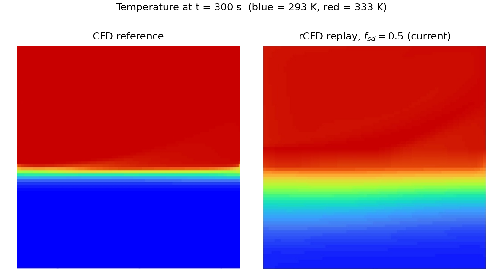
This matters beyond appearance. The quantities an engineer reads off a stratified field live exactly at that front: how much of the hot layer is usable, how thick the thermocline is, when the interface reaches an outlet. A field with the right mean but a smeared front answers such questions wrongly.
The deeper point from the §6 sweep is that no value of $f_{sd}$ can repair this. Diffusion only works in one direction: it can reduce a gradient, but it cannot rebuild one that has been washed out. Lowering $f_{sd}$ helps the mean temperature and hurts the stratification timing; raising it does the opposite. The method is missing the inverse operation. That inverse is a negative diffusivity: the same face exchange, run the other way, so that it sharpens instead of smooths. A normal diffusive exchange carries heat down the temperature gradient, from warm to cold. The sharpening step is its mirror image: it acts exactly where the exchange flux would run against the gradient, $(\nabla T) \cdot \vec{q} < 0$, and carries heat from the colder to the warmer side. Applied to a smeared front, it drains the blurred transition zone: the warm side gets warmer, the cold side gets colder, and the interface contracts back towards a step.
The overshoot guard. Left alone, this process is unstable. Pure anti-diffusion does not know when to stop: it keeps steepening until cell values pass the physical limits, producing water hotter than the inlet or colder than the initial fill. So the operator is only usable together with a rule that bounds it. The classical rule comes from Flux-Corrected Transport [8] [9]: no exchange may create a new local extremum. Every cell carries the minimum and maximum temperature over itself and its face neighbours, recomputed before each application. A cell that receives heat may rise at most to its local maximum; a cell that gives heat away may fall at most to its local minimum. The admissible exchange across a face is limited by these two headrooms, and the step takes only a fraction $s$ of the smaller one. A front can steepen until it is one cell wide, but no value can ever leave the range spanned by its neighbours, so no overshoot is possible by construction. The picture to keep in mind is an unsharp mask in image processing: sharpening, with a guard against halos.
/* stage 1: local bounds */
for each cell i:
Tmin[i] = min( T[i], T[neighbours of i] )
Tmax[i] = max( T[i], T[neighbours of i] )
/* stage 2: limited up-gradient exchange, in energy */
for each interior face (c0, c1):
hot = the warmer of c0, c1; cold = the other
if T[hot] == T[cold]: skip /* no gradient */
C_hot = rho cp V[hot] /* cell heat capacity */
C_cold = rho cp V[cold]
head_hot = C_hot * (Tmax[hot] - T[hot]) /* J, room to rise */
head_cold = C_cold * (T[cold] - Tmin[cold]) /* J, room to fall */
dq = s * min(head_hot, head_cold) /* moved energy */
dE[hot] += dq /* heat moves */
dE[cold] -= dq /* cold -> warm */
/* stage 3: convert back and clamp (safety net) */
for each cell i:
T[i] += dE[i] / (rho cp V[i])
T[i] = min( max( T[i], Tmin[i] ), Tmax[i] )The head-rooms are compared as energies, not as temperatures: each side is weighted with the cell heat capacity $C = \rho c_p V$, and each cell converts the moved energy back with its own $C$. For equal cells this reduces to plain temperature differences; on a general mesh it matches the volume weighting of the positive face swap the step undoes. Four properties follow directly. The step is conservative: every exchange is pairwise, $+dq$ on one side and $-dq$ on the other, so the total heat is untouched. It is bounded: stage 2 respects both headrooms and stage 3 clamps whatever remains, so no cell can leave its local neighbour range. It is self-limiting: at a sharp front the headrooms vanish, because each cell already sits at its local extremum, so the operator switches itself off instead of over-steepening. And it is cheap: three loops over the mesh per application, negligible next to the replay itself.
Where it lives in the code. The rCFD library already sketches this idea. The face-swap routine in src/rCFD_swap.h accepts a negative swap value and carries a small // neg. diff. branch for it. That branch, though, bounds the exchange with the fixed limits 0 and 1, which is natural for a concentration field; our transported temperature spans about 0 to 40 K relative to the 293 K reference, so the local min/max bounds of stage 1 replace those constants. The operator itself lives entirely in the user file (rCFD_user_run.h), as the hook user_access_data_after_swap that the run loop calls after the face-swap smoothing and before the balance belt of §4.1 — after the smoothing it counteracts, before the safety net that re-secures the global heat. It is written through the public accessors only (rcfd_get_face_c0, rcfd_get_face_c1, cell data and volumes), sits behind an on/off switch, and with the switch off the replay reproduces the baseline bit for bit. The core solver is untouched — the same pattern as the heat-loss source of §10.1.
The expected side effect, and the cure. An anti-diffusion sharpens every gradient it sees, including the small irregularities that the replay field always carries along the front. The smoothing step normally hides them; the sharpening step pulls them out, so a strong isotropic sharpening returns the front thin but saw-toothed — the same trade-off as in an unsharp mask, where sharpening also raises the grain. This is exactly what happened, and it is what the direction of the exchange fixes. The waviness comes from the sideways faces: they sharpen ripples along the front instead of the front itself. So the operator carries a directional weight, $\cos^2\theta$ between the cell link and the front normal: faces across the front act in full, sideways faces barely act. The normal can be prescribed (here the front is horizontal, so the vertical) or taken from the local temperature gradient, which removes the last hand-set choice; we tested both.
The sweep. All runs use the local-diffusivity base of §9.3, so the mixing comes from the database and the sharpening strength $s$ is the only free knob left. One number first: with six faces per cell, strengths $s \le 1/6$ are strictly safe — even the summed claims of all faces stay inside a cell's head-room, so the clamp can never be needed. We swept that range, continued above it to $s = 0.9$, and ran both directional forms over the moderate-to-high strengths: twenty-one replays in all, each of 600 episodes.
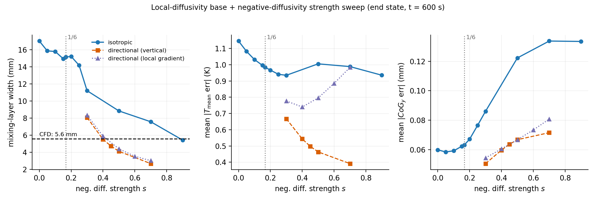
The reading is short. Below $s = 1/6$ the operator is safe by a margin and improves the mean temperature monotonically (1.15 K down to 0.98 K against the CFD trace), but the front hardly thins: small strengths repair the mean, not the smeared front. The isotropic form buys the CFD width only at $s = 0.9$ and pays with a saw-toothed, mottled field. The directional form with the vertical normal wins on every metric at once: at $s = 0.4$ it reproduces the CFD front width (5.5 mm against 5.6 mm), more than halves the mean deviation (0.54 K against 1.15 K), and produces the smoothest end profile of the whole sweep — smoother than the uncorrected replay itself, because the sideways ripple-amplification is switched off. The gradient-based normal beats the isotropic form everywhere and finds the width at the same strength, but stays behind the vertical one: at a ripple, the local gradient points along the ripple's own normal, so the data-driven weight sharpens ripples as readily as the front. Where the front orientation is known, prescribing it wins. No run overshoots: every end field stays inside 293–333 K, by construction.
The strength can come from the field as well (the pink series in Figure 7e). Reading the recorded local-diffusion field of §9.3 at run time would be the natural source, but the library exposes that field in preparation mode only, so a front sensor stands in: each face runs at $s_\text{face} = s\,(1 - \Delta T_\text{face}/\Delta T_\text{local})$ — full strength deep inside a smeared ramp, tapering to zero as a pair approaches its local extrema, ahead of the hard limiter. With the vertical normal, the sensor at a reference strength of $0.6$ reproduces the fixed working point in every metric at once, so what remains of $s$ is a single calibration constant, not a spatial tuning.
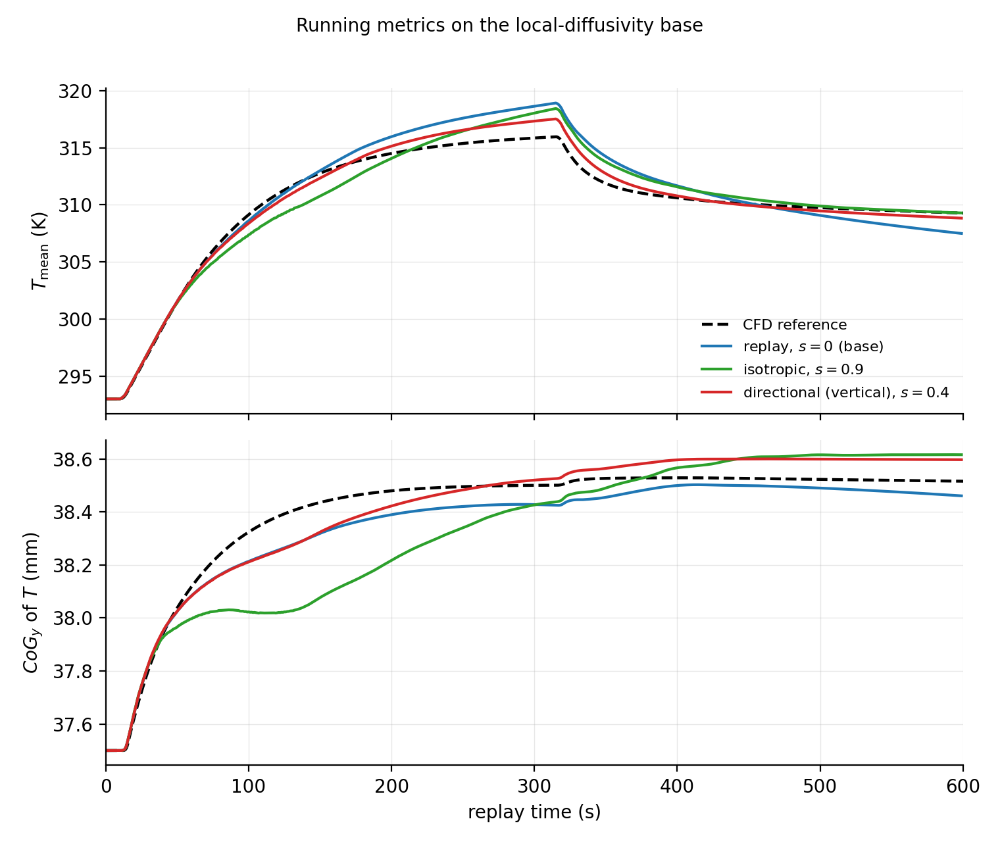
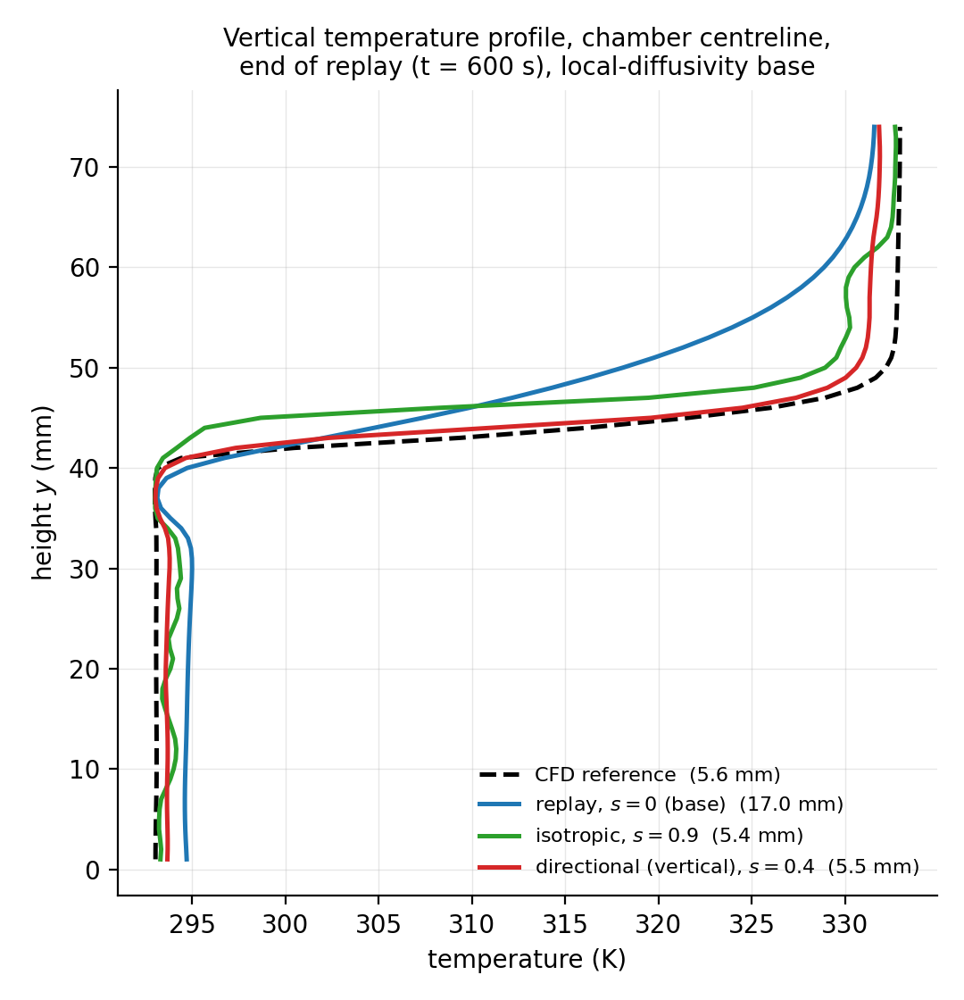
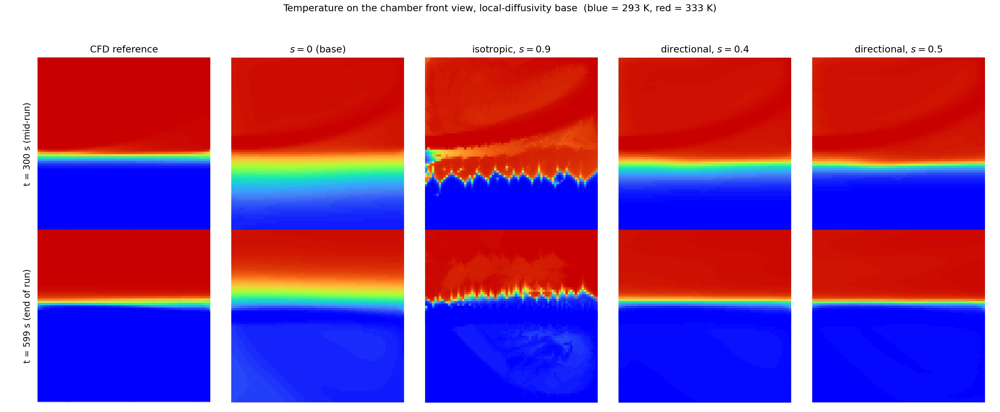
Two refinements probe how far the data-driven normal can be pushed. Smoothing the gradient field before it steers the weight — each sweep averages a cell's gradient with its face neighbours — changes almost nothing: the deviation falls from $0.740$ to $0.730$ K after six sweeps and the width stays at $5.9$ mm. So the gradient form's penalty does not come from grid-scale noise in the direction field; it comes from the operator sharpening coherent structures of its own making, which survive any local averaging. Blending the data normal with the vertical prior works better: $\mathbf{n} = a\,\hat{\mathbf{e}}_y + (1-a)\,\nabla T/|\nabla T|$, one blend factor. At $a = 0.5$ the deviation drops to $0.581$ K, and at $a = 0.7$ the run matches the vertical working point in every metric at once ($0.554$ K against $0.543$, width $5.54$ mm against $5.52$, the same smoothness) while still carrying a thirty-percent data component. In this chamber the prior is the active ingredient; what the blend shows is that it can be kept at no cost, which is what a case with an unknown front orientation would need.
| adiabatic replay, $s=0.4$ | mean $|\Delta T|$ (K) | front width (mm) |
|---|---|---|
| base (no sharpening) | 1.146 | 17.02 |
| directional, vertical | 0.543 | 5.52 |
| directional, gradient | 0.740 | 5.89 |
| gradient, smoothed (6 sweeps) | 0.730 | 5.90 |
| blend, $a=0.5$ | 0.581 | 5.61 |
| blend, $a=0.7$ | 0.554 | 5.54 |
| CFD reference | — | 5.59 |
The replay thus gains what §9.3 promised for the smoothing side, now for the sharpening side too: the mixing comes from the database, the direction comes from the geometry (or, where unknown, the data), and one number remains — the strength. Our working point from this material is the directional form with the vertical normal at $s = 0.4$. What sharpening cannot do is a different question, and heat loss answers it in §14.1.
Step 1 calibrated rCFD against a sealed, adiabatic tank. Step 2 changes the rules: the tank is now allowed to lose heat at its top surface, a thermal boundary condition the recurrence database never saw. We add the loss as a local source/sink, account for it in the energy balance, and ask the real test question: how well does a database built on adiabatic flow hold up when the physics shifts under it? It helps to read this section as a robustness test, not just "adding heat loss". The results below are our current findings.
Step 1 · calibration Step 2 · robustness test
in progress10 — The Heat-Loss Model
In Step 1 the tank was sealed: no heat went anywhere, it just moved around inside. Step 2 lets the tank lose heat, and the place it loses it is the top. The water surface there is in contact with the room air, and warm water gives up heat to cooler air across that interface, partly by warming the air next to it and partly through a little evaporation. The top is also where the warm, light water collects, so it is both the hottest spot and the only surface open to the air. The bottom and the side walls sit against solid material that barely conducts, so almost all of the loss happens at that free surface. Restricting the loss to the surface keeps the part that matters and ignores the negligible parts, which is a reasonable simplification for a tank this small.
We write the loss as Newton's law of cooling,
$$ \dot q_\text{wall} = h \, \bigl( T_\text{top} - T_\infty \bigr), $$
where $T_\infty = 293$ K is the room temperature, $T_\text{top}$ is the temperature of the surface cells, and $h$ is the heat-transfer coefficient. The quantity $\dot q_\text{wall}$ is a flux per unit area (W/m²); the total wall loss reported later is its surface integral $Q_\text{wall} = \int h\,(T_\text{top}-T_\infty)\,dA$ (W), added to each surface cell as a volumetric sink $\dot q_\text{wall}\,A_\text{face}/V_\text{cell}$. For a water surface losing heat to still air the natural value is small, roughly $h = 8$ W/m²K, so the cooling is gentle. That is the point of the small value: a weak loss only nudges the temperature and barely disturbs the flow, so the velocity field stays close to the adiabatic one we already recorded in Step 1, which is what lets us keep reusing that database. (Whether "barely" is good enough is the question we test in §12.)
Two implementation details matter:
- It is local. The mesh has a single combined wall zone, so we cannot simply paint a boundary condition on "the top". Instead we place the sink in a thin layer of cells right under the free surface, picked out by a coordinate test we chose ourselves: a cell belongs to the surface layer when $y > y_\text{max} - \Delta$, with $\Delta$ about one cell height. Heat then leaves only there, where water meets air.
- It is in the balance. rCFD keeps a global "balance safety belt" [2] that nudges the field back to a target every step. If we removed energy without registering it there, the safety belt would add it back and the loss would cancel out. So the same energy we remove from the top cells is also booked as a negative source in that balance, which stops the belt from restoring it.
The sketch below shows the mechanism we are trying to capture, which is also the one thing the cheap replay gets wrong. Heat escapes at the surface, the cooled water there gets denser and sinks, warm water rises to replace it, and that slow overturning loop keeps feeding warm fluid to the surface, which keeps the loss going. Tap the parts of each tank to read more.
10.1 — The heat-loss term in code: CFD and rCFD
Both points above show up directly in the code, and it helps to see them side by side. The model itself is the same on each side: Newton cooling $\dot q = h\,(T - T_\text{amb})$ on the top cell layer, where a cell counts as "top" when its centre sits within one cell edge $cs$ of the highest cell, $y > y_\text{max} - cs$. What differs is how each solver takes the term.
In the CFD reference the loss is a Fluent source term on the energy equation. DEFINE_SOURCE returns a volumetric sink, $-h\,(T - T_\text{amb})/cs$ in W/m³, for the top cells, plus its slope dS so the implicit solver stays stable. Integrated over a top cell this is $-h\,A\,(T - T_\text{amb})$, the loss across the top face, and Fluent balances the energy itself.
/* heat loss as a Fluent source on the energy equation */
DEFINE_SOURCE(top_heat_loss, c, t, dS, eqn)
{
double x[ND_ND], cs, source;
C_CENTROID(x, c, t);
cs = pow(C_VOLUME(c, t), 1.0/3.0); /* cell edge length */
if (Top_region_initialized && x[1] > Top_y_max - cs) { /* top layer */
source = -H_EXT * (C_T(c, t) - T_AMB) / cs; /* W/m3 sink */
dS[eqn] = -H_EXT / cs; /* linearization */
return source;
}
dS[eqn] = 0.0;
return 0.0;
}In the replay there is no energy equation to solve. The temperature is just carried along by the recorded flow, so we apply the loss to it by hand: each step the top cell cools by $\Delta T = -\dot q\,\Delta t / (\rho\,c_p\,V)$. Then we book the removed energy into the global heat balance as a negative source. Without that line the balance safety belt (the second point above) would read the missing heat as an error and put it back, and the loss would cancel. That balance entry is the part that is special to rCFD.
/* same Newton cooling on the top layer, applied to the transported
temperature, then booked into the global heat balance */
per_node_wall_heat = 0.0;
for (i_cell = 0; i_cell < int_cell_count; i_cell++) {
cs = pow(cell_volume[i_cell], 1.0/3.0);
if (Top_region_initialized && cell_center[i_cell][1] > Top_y_max - cs) {
T_cell = data[i_cell][water_temp] + reference_temperature;
q_cell = H_EXT * cs * cs * (T_cell - T_AMB); /* W over top face */
dT_cell = -q_cell * timestep / (cell_volume[i_cell] * density * heat_capacity);
data[i_cell][water_temp] += dT_cell; /* cool the cell */
per_node_wall_heat += q_cell * timestep; /* J removed */
}
}
/* register the removed energy so the balance belt does not add it back */
rcfd_modify_balance_mass_source_one(handle, water, water_temp, -per_node_wall_heat);This shape, a local source or sink plus a balance entry, is the standard rCFD way to drive a scalar on a frozen replay. The steel_RH_alloying tutorial in rCFDreloaded uses the same pattern to add alloy mass in an RH degasser; here we use it to remove heat at the surface, with temperature as the transported scalar instead of concentration. One small difference: the rCFD side reads $h$ from a file (H_EXT.in) at run time, so the $h$-sweep in §13 needs no recompile, while the CFD side keeps $h$ as a fixed constant.
10.2 — Interactive thermal lab
The lab below is a schematic, not a CFD field render: it shows the mechanism, while the cooling number it reports for each $h$ is the real measured value from our rCFD runs (§13). Pick a heat-transfer coefficient and watch the heat-loss tank (right) cool against the sealed adiabatic tank (left): the cold cap at the top deepens, the surface stratification labels fade, and the wall heat-flux arrows grow in number and strength. Switch on Infrared View for a thermal-camera palette.
11 — The CFD Reference with Heat Loss
First the ground truth. We re-ran the full CFD with the heat-loss sink switched on and compared it to the sealed adiabatic CFD. The physical value for a water surface in still air is gentle ($h = 8$ W/m²K), and at that value the cooling is small and easy to miss. To make the cooling, and the gap it opens, clearly visible, we turn the dial up to $h = 100$ W/m²K and use that as the reference case here. All numbers below are read at a common time $t = 600$ s, the span the rCFD replay also covers. We report three diagnostics: the mean temperature $T_\text{mean}$, the height of the heat $CoG_y$, and a new one, $\delta T_\text{mean}$, the average spread of temperature around the mean, i.e. how uneven the field is:
$$ \delta T_\text{mean} = \frac{\sum_i m_i\,\lvert T_i - T_\text{mean}\rvert}{\sum_i m_i}. $$
This $\delta T_\text{mean}$ is the mass-weighted mean absolute deviation (MAD) of the temperature from its mean. A closely related measure of spread is the standard deviation, $\sigma_T = \sqrt{\sum_i m_i\,(T_i - T_\text{mean})^2 / \sum_i m_i}$. Both say how uneven the field is; we report the MAD because it is less swayed by the few very hot cells in the warm cap, but the two track each other closely (for any field $\sigma_T \ge \delta T_\text{mean}$, and for a near-normal spread $\sigma_T \approx 1.25\,\delta T_\text{mean}$). The standard-deviation form needs only one extra term in the same cell loop, so it could be reported as well from a short re-run.
Before the table, here is the reference run playing out: the flow pattern, next to the temperature layering it builds up over time.
| Case | $T_\text{mean}$ (K) | $CoG_y$ (m) | $\delta T_\text{mean}$ (K) |
|---|---|---|---|
| CFD — adiabatic | 309.28 | 0.0385 | 18.45 |
| CFD — heat loss ($h=100$) | 299.49 | 0.0379 | 7.32 |
| difference | −9.79 | −0.0006 | −11.13 |
So in the real CFD, strong heat loss cools the tank by about 9.79 K at $t = 600$ s, and it also makes the field much more even: $\delta T_\text{mean}$ drops by 11.13 K, because cooling the warm top pulls the surface back toward the bulk. $CoG_y$ hardly moves. This 9.79 K is the number rCFD has to match. (At the gentle physical $h = 8$ the tank cools by only about 1.45 K. Turning $h$ up is what makes the cooling, and the gap below, easy to see.)
12 — rCFD vs CFD: the Gap
One check before the comparison. With the loss switched off ($h = 0$), the replay gives back the Step 1 result exactly: $T_\text{mean}$ and $CoG_y$ match the no-loss run with no difference, and $Q_\text{wall}$ stays at zero the whole time. So any cooling we see below comes only from the heat-loss term, not from a side effect of the code. The balance accounting that carries that term is checked separately in the $h$-sweep (§13), where it closes to about $0.03\%$.
Now the cheap side. We kept the existing adiabatic C2C database from Step 1 (no rebuild) and simply added the heat-loss source term to the replay. Because the absolute rCFD temperature already carries a small replay bias from Step 1, the fair thing to compare is the cooling itself, i.e. how much each method drops when heat loss is turned on:
Here are all three diagnostics side by side, taken at the end of the run:
| Method | Case | $T_\text{mean}$ (K) | $CoG_y$ (mm) | $\delta T_\text{mean}$ (K) |
|---|---|---|---|---|
| CFD | adiabatic | 309.28 | 38.5 | 18.45 |
| CFD | heat loss ($h=100$) | 299.49 | 37.9 | 7.32 |
| rCFD | adiabatic | 307.49 | 38.5 | 14.35 |
| rCFD | heat loss ($h=100$) | 304.46 | 38.2 | 10.78 |
Heat loss lowers the spread $\delta T_\text{mean}$ by about $11.1$ K in CFD but only about $3.6$ K in rCFD, again roughly a third. The rCFD spread is also lower overall ($\approx 14$ K against $\approx 18$ K adiabatic), because the frozen replay and the global face-swap smooth the field more than the resolved CFD does. $CoG_y$ hardly moves in either case, which fits a loss that only touches a thin top layer.
The key Step-2 result
The reused adiabatic database captures only about a third of the real heat loss: at $h = 100$ rCFD cools by 3.03 K against the CFD's 9.79 K (a ratio of ≈ 0.31), both read at $t = 600$ s. The same ordering shows up in $\delta T_\text{mean}$, where rCFD picks up only about a third of the CFD change. (At the gentle physical $h = 8$ the gap is even wider, rCFD 0.36 K against CFD 1.45 K, a ratio of ≈ 0.25, but the cooling there is so small it is hard to see; turning $h$ up makes the shortfall plain.)
Why does it fall so far short, with roughly two-thirds of the heat loss missing? Because we reused the adiabatic database from Step 1, the fluid flow in the replay is completely frozen: it only knows the motion that was recorded with the lid closed. In the real CFD, once the water at the top cools it gets heavier and sinks, and warm water rises to take its place. This is the convective overturning loop from Figure 8, and it keeps feeding warm fluid to the surface, so the heat loss keeps going. The replay does not contain that loop, because nothing was cooling when the database was recorded. So in the replay the top water cools in place: the surface difference $T_\text{top} - T_\infty$ shrinks, and the loss slows down. The missing piece is a flow pattern, not a diffusion setting, so we call it an advection gap. It fits how rCFD splits transport in the first place: the recorded shifts carry the advection, while diffusion only adds the small-scale mixing on top [5]. The Step-1 replay bias (~1.7 K on the absolute level) accounts for only a small part of the gap; the frozen flow is the main cause. This is the limit of reusing an adiabatic database and adding a source term on top, and it is the result Step 2 was meant to show. It is also a known soft spot of the method: applied to heat transfer in a fluidised bed, transport-based rCFD smeared out the sharp, localised heat-transfer layer that the flow drives [2]. Our under-captured cold cap is the buoyant-jet version of the same difficulty, reproducing a localised, flow-driven thermal structure on a frozen flow.
Advection
The bulk motion is carried by the recorded cell-to-cell shift maps, replayed step by step.
Small-scale mixing
Added on top by face-swap diffusion (the $f_{sd}$ knob), which smooths the field but does not move fluid around.
Cooling-driven down-flow
The buoyant overturning that heat loss sets up was never in the adiabatic database, so the replay cannot produce it.
What the gap really measures
It helps to read the shortfall as a test of database reuse, not just a heat-loss result. The recurrence database was recorded once, from the adiabatic flow, and Step 2 reuses it under a boundary condition it never saw. The roughly two-thirds shortfall at $h = 100$ (wider at the gentle $h = 8$) is then a direct measure of how far that one database stretches: the physics it did record (the advection in the shift maps) still carries over, while the physics it never recorded (the cooling-driven down-flow) cannot appear no matter how the source term is tuned. So the number to keep from Step 2 is not the cooling itself but how much of it a reused adiabatic database can recover, which §15 takes up by rebuilding the database from a heat-loss run.
The shortfall is not a fixed offset; it grows as the run goes on. The figure below tracks the cooling itself over time at $h = 100$: how much each method has cooled relative to its own adiabatic baseline.
12.1 — Watching it happen
Figure 8c showed the CFD reference under heat loss. Here is the rCFD replay of the same case, drawn the same way: temperature on the left, flow on the right. Setting the two clips next to each other is the quickest way to see what the replay keeps and what it loses.
That frozen flow is the whole story. With the loop fixed, the replay cannot let the cooled surface water sink and bring warm water up to be cooled in turn, so the cold cap never deepens the way it does in the CFD. The two-thirds of the cooling that goes missing is exactly that absent overturning, here as a picture rather than a number.
13 — Turning the Dial: the h-Sweep
To make sure the sink and the balance accounting behave the way they should, we turned $h$ up well past its physical value and watched the cooling grow. Because the source is registered in the balance, the response should be clean and monotonic in $h$ — rising smoothly with no runaway — and it is:
| $h$ (W/m²K) | $T_\text{mean}$ end (K) | max cooling (K) | energy removed (J) | max $Q_\text{wall}$ (W) |
|---|---|---|---|---|
| 8 | 307.14 | 0.36 | 179 | 0.34 |
| 50 | 305.64 | 1.85 | 966 | 1.94 |
| 100 | 304.46 | 3.03 | 1680 | 3.57 |
| 200 | 303.04 | 4.45 | 2707 | 6.33 |
The energy removed and $Q_\text{wall}$ both rise smoothly with $h$ — sub-linearly, as the cooling saturates — and in every case the global balance stays healthy: target and actual energy agree to within about $0.03\%$. That is the main check here: a local sink can be carried through the heat balance correctly, and the safety belt does not cancel it.
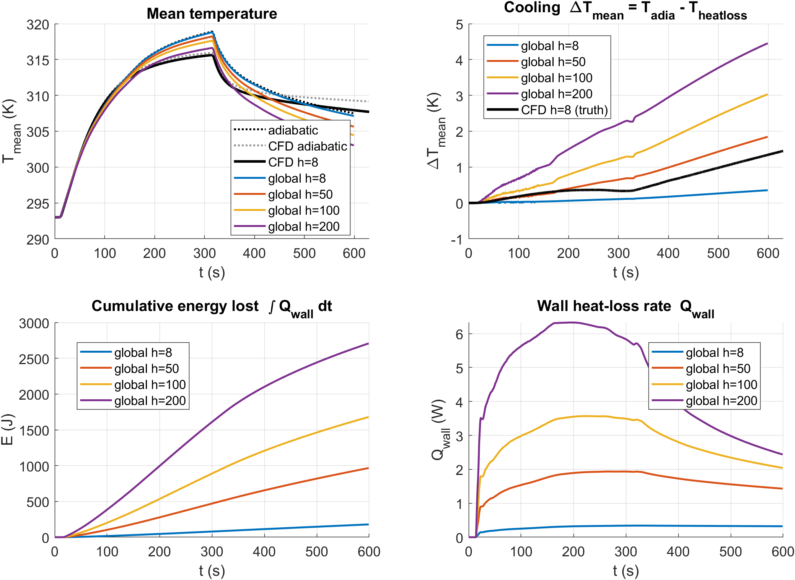
Two things to read off this. The model is well-behaved, with no runaway and no sign that the balance belt is cancelling the loss. And rCFD under-predicts at every $h$ where we have a CFD reference, both the physical $h = 8$ and the stronger $h = 100$; a much larger $h$ would be needed to make the reused database match reality, but that would be papering over the missing flow with an unphysical coefficient, not a real fix.
14 — Does Local Diffusion Help?
In §9.3 local diffusion already matched the hand-tuned face-swap on the adiabatic case: it reads a diffusion field per cell from the database (local_diff_on = 1) instead of tuning $f_{sd}$, following Lumetzberger et al. [3] and Abbasi et al. [5]. The question now is whether this same no-tuning path also helps once heat loss is on. We ran it at the reference $h = 100$ on the same 600-frame field-based database. The result is clean, but for heat loss it does not help much:
| $T_\text{mean}$ at end (K) | no diffusion | local diffusion | global face-swap |
|---|---|---|---|
| adiabatic | 308.90 | 307.49 | 307.49 |
| heat loss ($h=100$) | 306.36 | 304.46 | 304.46 |
The first column is the same replay with the diffusion model switched off. Turning it on, by local diffusion or by the global face-swap, lowers $T_\text{mean}$ from that baseline by $1.4$ K in the adiabatic case and by $1.9$ K under heat loss. The lowering is a little larger under heat loss because the same mixing also spreads heat into the cooled top layer, where a bit more of it leaves through the surface. So the diffusion model is active and doing real work.
Both with and without heat loss, local diffusion and the global face-swap come out identical, with the same $T_\text{mean}$, $CoG_y$, and $\delta T_\text{mean}$ (the cooling is $3.03$ K either way). That makes sense once you look at what local diffusion is. It comes from the second moment of the propagator, $k^{(2c)}$, in Lumetzberger et al. [3], a per-cell measure of how far cell content spreads, which sets a local diffusion coefficient. So it controls how heat smears out locally and cleans up the numerical smoothing inside the flow we already have. What it cannot do is invent the missing down-flow vectors, since the sinking cooled parcels live in a flow field that was never recorded. The local diffusivity field itself (Figure 7c) is the same under heat loss as in the adiabatic case, because it is read from the same recorded flow: the frozen database cannot hand the heat-loss run a diffusivity, or a flow, that adapts to the cooling. Switching the diffusion model only rearranges heat within a frozen flow; it cannot add a flow pattern that is not there. So local diffusion is a useful refinement, because it lets us drop the hand-tuned $f_{sd}$ knob for something physical, but it does not close the heat-loss gap.
One idea for closing the gap → §15
If the problem is a missing flow pattern, the natural thing to try is to give rCFD a database that already contains it: rebuild the C2C database from a CFD run that itself has heat loss, so the cooling-driven down-flows are recorded into the patterns. The trade-off is that such a database is tied to that one heat-loss setting, swapping rCFD's "build once, reuse everywhere" strength for accuracy. We test it next, in §15.
14.1 — Sharpening under heat loss: a clean negative result
§9.4 gave the replay a sharpening step that repairs the smeared front on the adiabatic case. The natural next question: does it also help under heat loss? We switched the §10 heat-loss sink on at $h = 100$, kept everything else of §9.4 — the same adiabatic local-diffusivity database, the same working point — and ran three replays: sharpening off, isotropic at $s = 0.4$, directional at $s = 0.4$. With the sharpening off, the run reproduces the heat-loss replay of the table above digit for digit ($304.46$ K), so the comparison sits on a verified base.
| Run | $T_\text{mean}$ at end (K) | cooling captured (K) | share of CFD |
|---|---|---|---|
| CFD, $h=100$ | 299.49 | 9.79 | 100% |
| replay, sharpening off | 304.46 | 3.03 | 31% |
| replay + isotropic $s=0.4$ | 306.34 | 1.15 | 12% |
| replay + directional $s=0.4$ | 306.21 | 1.28 | 13% |
| replay + directional, gradient normal $s=0.4$ | 306.38 | 1.11 | 11% |
| replay + convective adjustment (one sweep) | 303.93 | 3.56 | 36% |
| replay + convective adjustment (ten sweeps) | 303.64 | 3.85 | 39% |
| replay + directional + adjustment (ten sweeps) | 305.17 | 2.32 | 24% |
| replay + penetrative mixing profile | 304.18 | 3.31 | 34% |
| replay + strong mixing profile ($c=1$, $\lambda=35$ mm) | 303.22 | 4.27 | 44% |
| replay + prescribed roll, 5 mm/s | 302.27 | 5.22 | 53% |
| replay + prescribed roll, 20 mm/s | 300.31 | 7.18 | 73% |
| replay + prescribed roll, 40 mm/s | 299.65 | 7.84 | 80% |
| replay + prescribed roll, 50 mm/s | 299.50 | 7.99 | 82% |
The sharpening makes the heat-loss replay worse, not better: the captured cooling drops from 31% to 12–13%. That is a negative result, but it is the clean kind, because it says precisely where the remaining error lives.
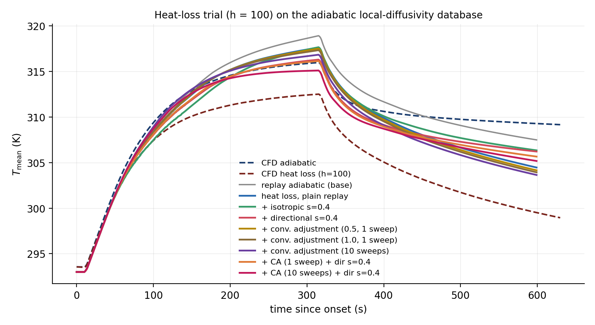
The gradient-normal row was added later, and it closes a hole in this table: the two directional forms had only ever been compared under heat loss on the rebuilt database of §15. Here the vertical normal keeps 13% and the gradient normal 11%, the same order as on the rebuilt database. The end profiles do not separate the two: both fronts come out thinner than the CFD's, 3.3 mm for the vertical normal and 3.2 mm for the gradient one against 4.5 mm in the reference, so on this database the sharpening overshoots the front in both forms and the difference in captured cooling is not a front-width difference. One check was needed before trusting the pair. The vertical run was rebuilt from the current code and reproduces the earlier one bit for bit, so the two forms are being compared on the same code base and nothing drifted in between.
The shares in that table deserve a footnote of their own, because they all use one fixed reference, the plain adiabatic replay at $307.49$ K. An operator moves the adiabatic end state too: replayed with the sink switched off, the isotropic form ends at $308.93$ K, the vertical at $308.88$ K and the gradient at $309.25$ K, more than a Kelvin above the plain replay. The tank has an outlet, so a replay is not energy-closed, and rearranging the temperature field changes what leaves through it. Measured against its own no-sink end state, each sharpening run keeps far more of the cooling: $24\%$ isotropic, $25\%$ vertical, $27\%$ gradient, against $29\%$ for the plain replay. So the drop from $29\%$ to $11$–$13\%$ belongs to the fixed reference, not to the wall alone, and on the fair reference the two normals swap places. What does not depend on the choice is the mechanism, and the wall-flux curve below settles that independently: the sharpened runs end at $1.3$–$1.4$ W against $2.0$ W. The film is sealed and the flux starves either way. We keep the flux curve as the evidence and quote the share with its reference.
Why? The sink at the top surface scales with the film temperature, $q = h\,A\,(T - T_\text{amb})$. In the CFD, the cooled surface water sinks in thin cold streaks, the bulk overturns, and warm water keeps arriving at the surface to be cooled in turn — the flux stays alive. The replay's flow is the frozen adiabatic loop, and a frozen flow does not react to the new cold fluid: nothing sinks. The plain replay still cools noticeably, because its numerical smearing keeps exchanging fluid across the top layer — cold down, warm up. That smearing, the very thing §9.4 is built to remove, had been quietly standing in for the missing vertical transport. The sharpened replays remove it: a thin, clean cold film settles on the top layer, its temperature falls towards $T_\text{amb}$, and the wall flux quenches itself. The hot bulk below stays hot.
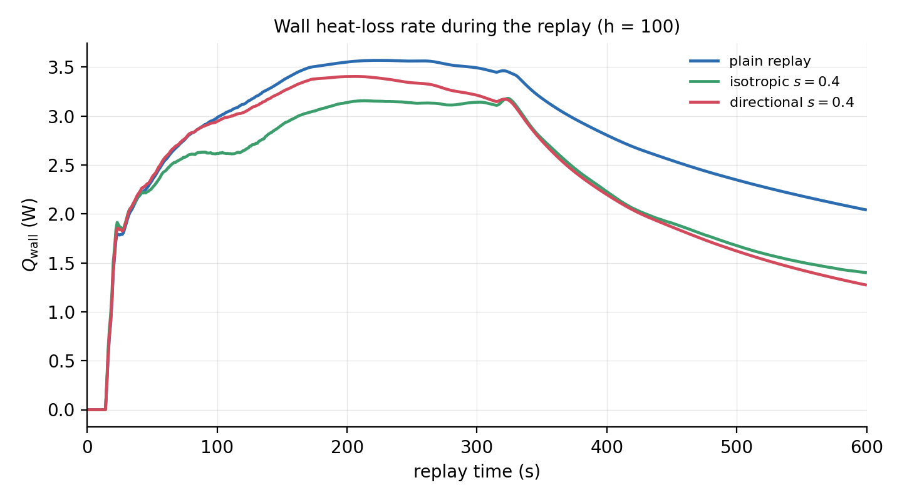
The counterpart: convective adjustment. The cold film on warm fluid is statically unstable — and one part of the missing transport can be modelled locally after all. Atmospheric and ocean models treat exactly this situation with a convective adjustment: wherever a vertical pair of cells is unstable, the pair exchanges energy towards its neutral mean. We added this operator to the same user hook. It acts on vertical links only, each exchange moves a pair towards its own mean (so it cannot overshoot), it can sweep the mesh several times per replay step so the surface mixed layer can eat downward, and it is silent wherever the column is stable: switched on in the adiabatic replay it changes the end temperature by less than 0.01 K. On its own it lifts the captured cooling from 31% to 39% (ten sweeps per step) and revives the wall flux (3.0 W at the end against 2.0 W, Figure 11c). Combined with the directional sharpening it repairs most of what the sharpening had cost, 13% back up to 24%: the two operators are compatible, one steepening stable fronts, the other removing unstable ones.
The saturation is as telling as the gain: ten sweeps buy only a few points more than one, and a second, sharper variant confirms the cap is real. In a sorting mode the unstable pair swaps content instead of mixing, so a cold parcel falls one cell per sweep undiluted, the way a plume would — and it lands at the same 38%. A third local rule, a penetrative-mixing profile in the spirit of the ocean-model K-profile closures, lands at 34%: every vertical pair exchanges a share $c\,e^{-d/\lambda}$ of its imbalance towards the pair mean per step ($c = 0.3$, depth $d$ from the top wall, $\lambda = 20$ mm) — through stable columns too, which is its point. Three mechanisms this different agreeing on one number means the limit is not an artefact of any scheme. What limits them all is the supply side: the wall keeps extracting heat only if warm fluid keeps arriving at the surface, and that is the job of the overturning loop, which reaches into the stably stratified bulk where no local rule acts. Together they bound what local scalar-side operators can contribute at roughly a third of the CFD cooling.
Breaking the bound, deliberately. To confirm that reading, the roll rows of the table step outside the local family: a prescribed circulation — a double convection roll spanning the hot layer from the front height ($y = 40$ mm) to the top wall, down at both side walls and up in the centre, defined by the streamfunction $\psi \propto \sin(2\pi x/L_x)\sin(\pi(y-y_0)/L_y)$ with peak speed $U_0$. Each replay step is split into ten sub-steps, and in each the faces exchange along the local roll velocity (moved fraction capped at 0.45 per sub-step), in the same bounded pairwise form as the adjustment, so no cell can leave its pair range. Like every rung in this table, it sits behind a single define in the same user file, so each row can be reproduced by one switch and a replay. A circulation is not a local rule, and it breaks through the bound: 53% of the CFD cooling at $U_0 = 5$ mm/s, 73% at 20 mm/s — speeds inside the range of the recorded CFD flow (the velocity figures of this study span 0–50 mm/s). Pushed to the top of that range, the recovery keeps climbing but flattens: 80% at 40 mm/s, 82% at 50 mm/s. Part of the saturation is numerical, since at high speeds more and more faces run into the exchange cap; part is structural: the roll is steady and its geometry fixed, while the CFD overturning is unsteady and reaches deeper as the layer cools. Even a generous prescribed circulation stops short of the CFD. Even the strongest diffusive stand-in (the mixing profile at full strength over the whole hot layer, 44%) stays clearly below the organised circulation: diffusive transport, however strong, delivers warm fluid to the surface less effectively than a loop. And every run in the table is verified the same way: each field stays inside the physical 293–333 K range (the largest end-field maximum of the whole set is 329.2 K), and the roll re-run behind the montage reproduced its trace bit for bit. Two honest notes belong to this. The roll is a calibrated model (its speed and geometry are set by hand), so it demonstrates the mechanism rather than predicting from the database. And its numerics teach the final lesson: a pure donor-cell transfer of the prescribed advection diverges at the user level, because the hook has neither the divergence-free discretisation nor the partition synchronisation of the cell-to-cell machinery — only the bounded exchange form is stable. Prescribed transport wants to live where recorded transport lives: in the database, either recorded from the cooling regime (§15, §16) or written into the cell-to-cell patterns as synthetic displacement fields.
The roll can move into the database. That last sentence has now been tested directly. A preparation run records the adiabatic flow while the prescribed roll is added to the displacement markers as an extra conservative flux, so the recorded displacement fields — the ones the preparation machinery turns into cell-to-cell shifts — carry the flow plus the roll, and the replay needs no roll code at all. The first attempt failed in an instructive way. At 20 mm/s a one-second frame is a twenty-cell displacement, and the shift applies it in one jump: the layering is torn apart (Figure 11h, fourth panel) and the capture collapses, while the same roll at the hook, split into ten sub-steps, stays fine. The failure is granularity, not principle. Rebuilt at 5 mm/s, where a frame is a five-cell shift, the database roll lands within two points of its hook twin at the same speed — 49% against 50% in the account of §15.3's recovery figure (mean of the last 20 s; the hook rungs above read 50% and 69% in that account) — and the frames keep the stratified structure instead of scrambling it. One bookkeeping note travels with this database: even with the wall loss off, its replay ends 3.9 K colder than the adiabatic base, because the steady roll keeps carrying warm fluid down to the outlet and the export term removes it; of the 49%, about ten points go through the wall path and the rest through that stirring-driven export. The practical reading: a prescribed circulation can live in the database as a synthetic displacement field, provided its per-frame displacement stays at a few cells.
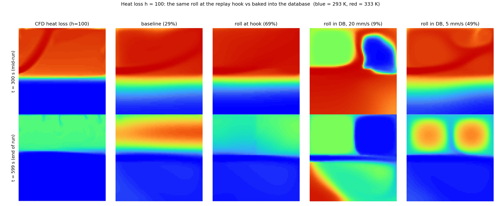
The two numbers agree, 49% against 50%, but the video is where the two homes stop agreeing. Run the roll-at-hook and the roll-in-database panels side by side and the database roll's own geometry becomes hard to miss: two counter-rotating cells, prescribed as a single streamfunction spanning the tank, print themselves onto the field as two warm islands that never fully clear. At the hook the same roll is superimposed step by step on a replay field the recorded flow is already stirring, and the two mix well enough that no cell pattern survives to the end; baked into the database, the roll is the recorded motion, so its two-cell fingerprint replays identically every frame and never gets rubbed out. The CFD, by contrast, drains through many small plumes, triggered where and when the film happens to break, not through two large fixed cells. Same total amount, same speed, and still a different picture, because the geometry that produces the number is not hidden in a single end-state frame the way it is in motion.
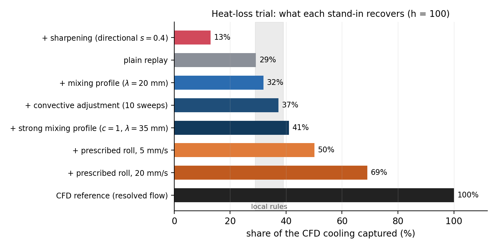
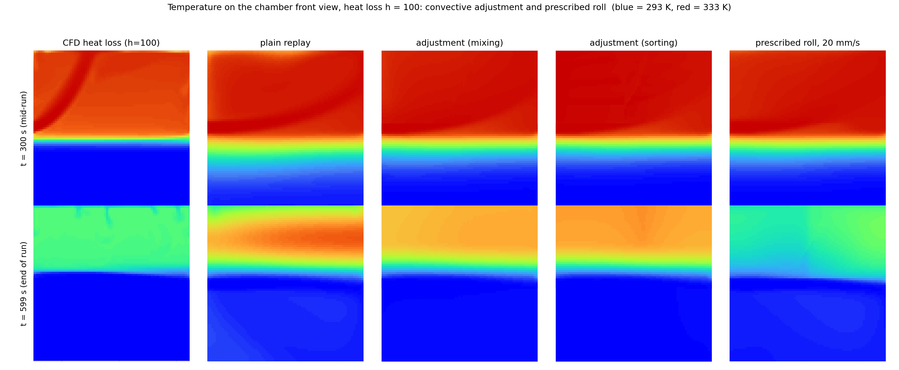
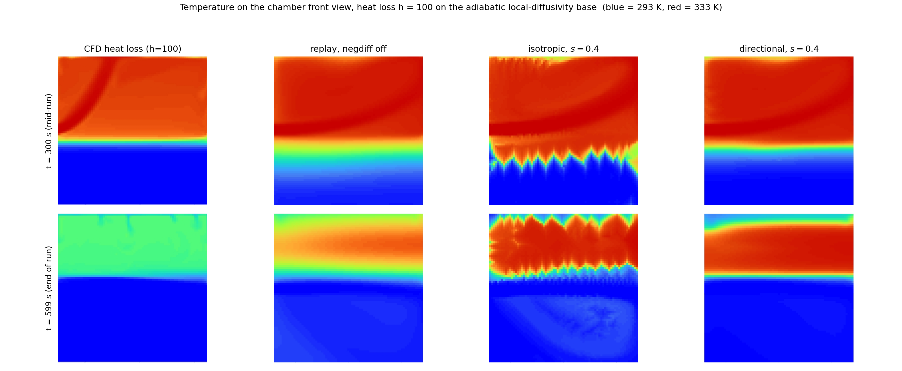
Put next to §14, this sorts the two errors of the heat-loss replay cleanly. The smeared front is a numerical error, and the scalar side now fixes it (§9.4). The missing cooling is a transport error, and the scalar side is now measured out on both ends of it: the diffusion model does not close it (§14), removing the diffusion makes it worse, and the convective adjustment buys back only its bounded share. All of it points at the same place: the flow states in the database. That is exactly the motivation for §15 and §16 — bring the cooling-driven motion into the recorded patterns; the sharpening step then has the job it is good at, keeping the resulting fronts and low-temperature streaks sharp instead of smeared.
15 — Rebuilding the Database with Heat Loss
Section 12 pinned the gap on a missing flow pattern: the adiabatic database never saw the cooling-driven down-flow, so the replay cannot make it. The obvious fix is to build the database from a run that already has the heat loss in it, so those down-flows are recorded from the start. We did that. We re-ran the CFD with the $h = 100$ wall loss switched on, recorded a fresh 600-frame C2C database from it (the non-adiabatic database), and replayed the same heat-loss case on it. Everything else was held fixed: $f_{sd} = 0.5$, $h = 100$, read at $t = 600$ s.
The result is the surprise of Step 2. The rebuilt database does not close the gap. Measured the fair way, the cooling each method reaches from its own no-loss baseline, it does a little worse:
| at $t = 600$ s | $T_\text{mean}$ (K) | $CoG_y$ (mm) | $\delta T_\text{mean}$ (K) | cooling (K) | recovered |
|---|---|---|---|---|---|
| CFD, heat loss | 299.49 | 37.9 | 7.32 | 9.79 | — |
| rCFD, adiabatic database | 304.46 | 38.2 | 10.78 | 3.03 | 31% |
| rCFD, non-adiabatic database | 303.83 | 38.1 | 9.05 | 2.52 | 26% |
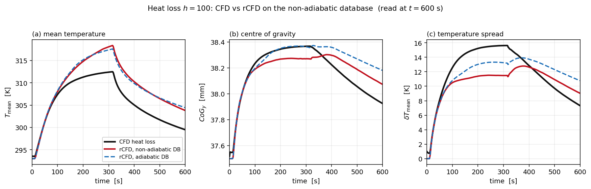
So the rebuilt database recovers about $26\%$ of the cooling, against $31\%$ for the reused adiabatic one. Rebuilding did not help; if anything it cost a few points. That is worth sitting with, because it is the opposite of what the rebuild was meant to do.
The reason is in how the non-adiabatic run settles. With the loss on, the jet runs colder, so it is less buoyant, so its circulation is weaker. The database records that weaker loop. A weaker loop carries less warm fluid up to the surface where the loss acts, so the frozen flow, even though it was born under cooling, moves less heat to where it can leave. The deeper point is that the real cooling is a transient. The flow starts hot and vigorous and slows as the tank cools, passing through a whole sequence of regimes. A single database freezes one of them: the adiabatic one freezes the hot, vigorous end, the non-adiabatic one freezes the cold, weak end. Neither holds the sequence, and the sequence is what the heat loss needs.
One thing the rebuild does improve is the evenness of the field. $\delta T_\text{mean}$ drops from $10.78$ K on the adiabatic database to $9.05$ K, a step toward the CFD's $7.32$ K, because the recorded cooled flow is already better mixed. Pushing the face-swap up to $f_{sd} = 0.75$ takes it a little further, to $\delta T_\text{mean} = 8.36$ K and $T_\text{mean} = 303.01$ K. But that is a sensitivity check, not a fix: more face-swap is more diffusion, and the gap is advective, so the cooling saturates well short of the CFD, the same lesson as the $h$-sweep in §13. We keep $f_{sd} = 0.5$ as the value to report, the one anchored by the local-diffusion field in §9.3.
15.1 — How the heat-loss database is built
Only one thing changes between the two databases, and it is where the heat loss acts. For the adiabatic database (Step 1), the prep CFD is sealed: it records the buoyant flow with no loss, and the wall loss is added only later, at replay, as the passive scalar sink from §10.1. For the non-adiabatic database, the same loss is switched on inside the prep CFD itself. It is the CFD-side source term from §10.1, a volumetric sink in the top cell layer, $\dot q = -h\,(T - T_\infty)/\Delta x$ (W/m³), added to the energy equation rather than to a passive scalar. So the cooling is felt by the real temperature, which changes the density, which changes the buoyancy, which changes the flow. The recorder then writes that cooled flow into the C2C maps. Everything else is identical to Step 1: same mesh, same 600 frames, same recurrence settings, only the recorded flow now carries the cooling-driven down-flow.
At replay the heat loss is applied once more, the same passive scalar sink used on the adiabatic database, so the table above is a like-for-like test: both runs drive the temperature scalar with the identical $h = 100$ term, and the only difference is whether the recorded flow underneath it ever felt the cooling. That is what makes the result clean to read — the 26%-against-31% difference is down to the flow database alone, not to the heat-loss term.
15.2 — The animation against the number
It is tempting to judge the replay by eye. Here is the rebuilt-database replay, drawn like the CFD reference, temperature on the left and flow on the right:
For much of the run its temperature field does look like the CFD: a warm layer floating on cold water, the same broad split top to bottom. That is the trap. Set the two side by side, frame for frame, and you can see where they part:
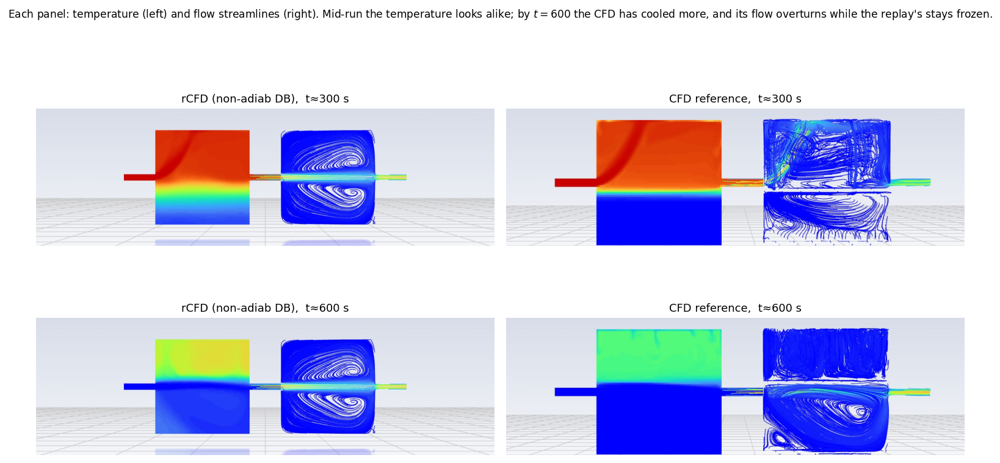
Two things give the gap away. The temperature keeps cooling in the CFD but stalls in the replay: by $t = 600$ s the CFD cap has faded from orange to green while the replay's is still yellow, several Kelvin warmer, and that warmer cap is the $\sim 4$–$5$ K bias the metric reports. The flow tells the rest, the CFD overturns the whole run as the cooled surface water turns heavy and sinks, while the replay never moves off the frozen adiabatic loop. That missing overturning is the advection gap of §12, here as a picture. So the animation does not say "same as CFD"; it says the replay gets the easy part right, the warm jet and the broad layering the recorded advection carries, and misses the cooling-driven flow that the number, and the flow panel, both catch.
15.3 — Rebuilding it once more, with the local-diffusivity field on board
The rebuilt database of §15.1 had one gap of its own. It never stored the local-diffusivity field, so every replay on it had to fall back to the global face-swap. We rebuilt it once more, with the recorder writing that field frame by frame, the same 600-frame recipe as always. We checked the recording before using it: the preparation run reproduces the reference heat-loss CFD digit for digit in the mean-temperature trace (303.2175 K at $t = 494$ s in both files). So this database holds the correct cooling flow and supports the local-diffusion base that §9.3 anchored.
A cooling-flow database needs one extra piece of bookkeeping. Even with the replay's heat-loss term switched off, a replay on this database ends $1.10$ K colder than the adiabatic-base replay. The recorded motion exports heat differently all by itself. So every run below carries two shares. The total share measures all its cooling against the fixed adiabatic-replay end state, the way the trial of §14.1 counted. The fair share subtracts the database's own no-loss drift first, the way §15 counted, so it isolates what the wall-loss path adds.
| replay on the heat-loss database | end $T_\text{mean}$ (K) | total share | fair share | mean $|\Delta T|$ vs CFD (K) |
|---|---|---|---|---|
| no wall loss (database flow only) | 306.53 | 11% | — | 4.85 |
| plain replay | 304.04 | 35% | 25% | 3.64 |
| + isotropic sharpening, $s=0.4$ | 306.87 | 7% | −4% | 5.38 |
| + directional sharpening, gradient $s=0.4$ | 306.02 | 16% | 5% | 4.13 |
| + gradient, smoothed (2 sweeps) | 306.03 | 16% | 5% | 4.12 |
| + blend of gradient and vertical, $a=0.5$ | 305.55 | 20% | 10% | 3.77 |
| + directional gradient $s=0.4$ + stability guard | 305.87 | 17% | 6% | 4.06 |
| + directional sharpening, vertical $s=0.4$ | 305.39 | 22% | 11% | 3.61 |
| + directional vertical $s=0.4$ + stability guard | 305.16 | 24% | 14% | 3.43 |
| + mixing profile (transport) | 303.66 | 39% | 28% | 3.4 |
| + prescribed roll, 20 mm/s (transport) | 300.08 | 74% | 63% | 2.39 |
| + roll 30 and vertical sharpening (transport) | 299.41 | 81% | 70% | 1.77 |
Read the plain row first, because it settles the question §15 left open. With the local-diffusion base the rebuilt database now captures $35\%$ in total, against $29\%$ on the adiabatic database. So the recorded cooling flow does help. But the split shows how it helps. Eleven points come from the flow's own export, and the fair share, $25\%$, still sits below the adiabatic $29\%$. The flow that was born under cooling moves part of the heat out before the wall term can take it. So the rebuild changes where the cooling comes from more than how much of it arrives. That is §15's lesson restated with better numbers.
The rows below the plain replay split cleanly into two groups, and that split is the whole point. The sharpening family, the negative diffusivity with its directional weights, sits below the plain replay, every one of them. The transport operators, a mixing profile and a prescribed roll, sit above it, the roll runs above 70%. Sharpening never adds cooling; transport does. The next two parts read the sharpening family in detail, then the transport line. That contrast is the answer to the natural question: can the replay be made to cool like the CFD, and if so how.
Before the detail, one figure fixes what the percentages actually mean, since every number in this part is a percentage and it is fair to ask where each one is measured. The recovery is a distance between two fixed temperatures. The plain replay ends at $307.62$ K and counts as $0\%$: it has captured none of the heat-loss cooling beyond what the filling phase already gave. The CFD heat-loss run ends at $298.98$ K and counts as $100\%$. The gap between them, $10.19$ K, is the cooling there is to capture. Any run's recovery is just how far its own end temperature has moved from the $0\%$ mark toward the $100\%$ mark, as a fraction of that gap. So a run halfway across has captured half the cooling, and the roll runs, near the cold end, have captured about four fifths.
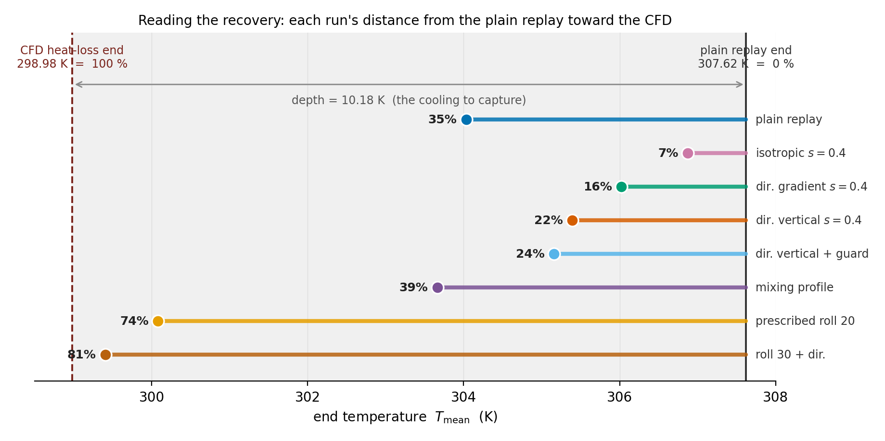
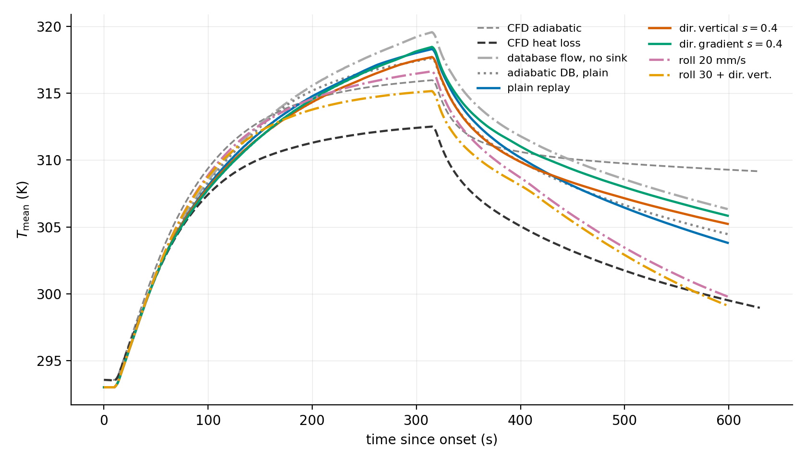
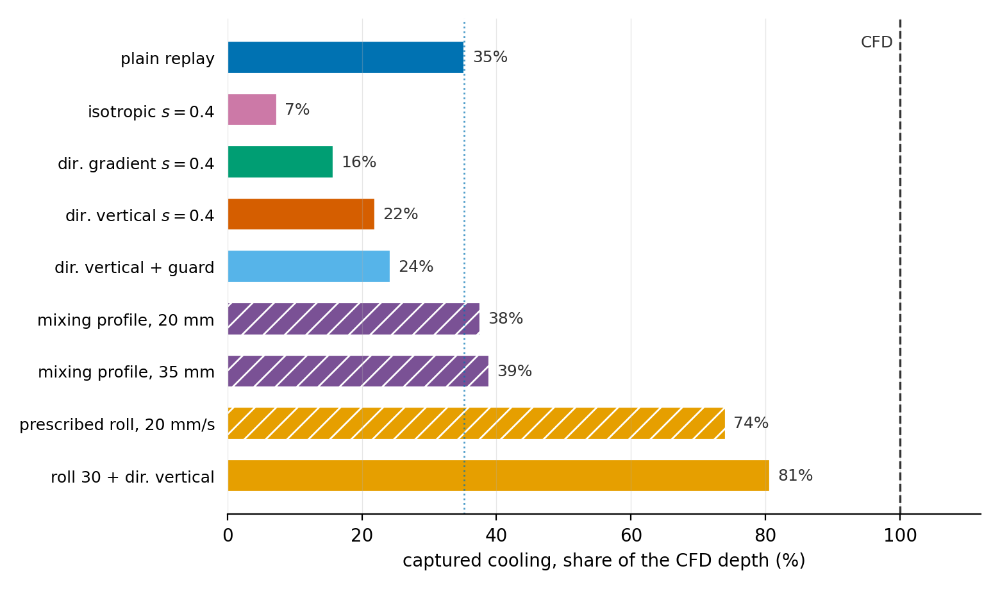
15.4 — Sharpening and circulation on the recorded cooling flow
The negative-diffusivity operators come over unchanged, and they behave exactly as they did on the adiabatic database. Every sharpening form reduces the captured cooling, the vertical normal stays ahead of the gradient-based one, and the sensor-adaptive strength lands on its fixed counterpart. The mechanism survives the rebuild intact. The wall term feeds on a warm top layer. Smearing keeps refilling that layer, so the flux stays alive. Sharpening locks a thin cold film on top, and the flux starves. A recorded cooling flow does not unseal the film, because its plumes sit at the recorded times and places, not where the replay's own film forms.
This ranking is surprising, and it is worth pausing on. A weight that takes its direction from the data ought to be the smarter of the two. Where the front is flat, it finds the vertical direction on its own, with nothing set by hand. The problem is that it reads all of the data, not just the part that matters. The vertical normal carries one piece of prior knowledge: in a stratified tank, the front that matters is the horizontal one gravity builds. That knowledge acts as a filter. The sideways ripples the replay's transport keeps producing get no sharpening, because their gradients point the wrong way. The gradient weight has no such filter. Every ripple is a front to it, so it steepens the noise with the same care as the signal. And once it has steepened a spurious intrusion, the intrusion's own gradient keeps the weight pointed at it, a feedback that fixes the artefact in place. The green band inside the hot layer in Figure 17 is that feedback made visible. Under heat loss the same trait works directly against the capture. The sharpest structure in the field is the cold film itself, so the data-driven weight seals it more completely than the vertical form does. The prescribed normal wins not because it knows more physics, but because it ignores more noise.
A stability guard: how to stop the sharpening from hurting the cooling. The cooling is lost because the operator sharpens the one front it should leave alone: the cold film, cold sitting above warm. The fix is to teach it the difference. The bounded step already carries one guard, the head-room limiter that keeps the exchange inside the neighbour range, so it can never overshoot (this is the flux-corrected-transport rule, Boris & Book 1973, Zalesak 1979, Kuzmin & Turek 2002). That limiter controls the amplitude of the step. What the heat-loss case needs is a guard on its direction, and the physical criterion for it is static stability. A vertical pair with the colder cell on top is statically unstable, the classic configuration gravity wants to overturn (Turner 1973; Chandrasekhar 1961). Sharpening across it drives heat further from the surface, the wrong way for a wall that cools from above. So we add one test to the face loop: on a near-vertical link whose upper cell is the colder one, skip the sharpening. Everywhere else, on the stable main thermocline and every horizontal link, the operator runs unchanged. The guard is ours, but it sits in the same family as the limiter it extends. Both refuse the anti-diffusive step where it would do harm, one by amplitude and the other by orientation.
The guarded rows show the effect, and it is in the right direction. The guard recovers part of the lost cooling and tightens the field at once. It helps most where the operator had been doing most harm: the isotropic form climbs from $7\%$ to $14\%$, the gradient form from $16\%$ to $17\%$, and the vertical form from $22\%$ to $24\%$. The guarded vertical run has the smallest trace deviation of the whole sharpening family ($3.43$ K), because the sharp main front is kept while the film is left to breathe. The guarded gradient run is the telling one. The guard heals that form's centreline artefact: the end-profile width returns from 46 mm to 5.6 mm. But it buys the least cooling of the three, because sharpening its own ripples, the other half of its penalty, is invisible to a stability test. And the guard stops at the plain replay, which is the honest ceiling. The remaining shortfall is not from the film, which is now skipped. It is from the main thermocline the operator is still, correctly, sharpening. Steepening a stable front also slows the slow vertical spread of heat across it, and that spread was part of what fed the surface. A sharpening step can be kept from hurting the cooling. It cannot be made to add cooling, because adding cooling means carrying heat to the surface, and that is a different job.
That different job is what the prescribed roll does, and it stays the strongest lever. The recorded cooling flow raises its ceiling to $74\%$ at 20 mm/s and $81\%$ at 30 mm/s under the vertical sharpening, an end temperature of $299.41$ K against the CFD's $298.98$ K. A gentler transport term is a penetrative mixing profile that stirs through the stable column with a strength decaying with depth (in the spirit of the ocean K-profile closures, Large, McWilliams & Doney 1994). It is the first operator in the whole study to move the capture up from the plain replay, to $38$–$39\%$. Both belong to a separate line of work, since how to supply the missing overturning is a study of its own. But next to the sharpening family they make the contrast concrete: sharpening rearranges heat and loses cooling, while transport carries heat and gains it. One combination fails and is worth recording. The roll under the gradient-based normal blows up within a few steps of the jet's arrival, because the gradient weight reads the very field the roll is rewriting in the same pass. That is a coupling of two user-level operators through the field they both touch.
The wall-side energy account says where all these differences live. Integrating the wall-loss power over the run gives $1.9$–$2.0$ kJ for every stable run in the table, sharpened and transported alike. The transport runs even end with the lower wall flux, their top layer sitting closer to the ambient. So the extra cooling is not pulled through the wall. It is heat the vertical motion carries down and away, instead of parking it in the upper bulk. The capture is decided by transport, not by the wall model.
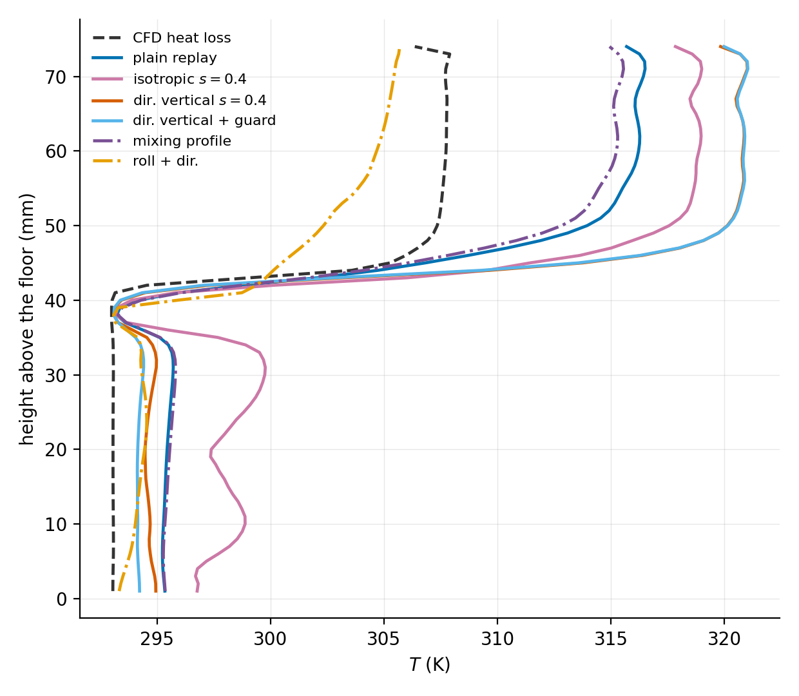
15.5 — The pictures against the numbers, again
§15.2 ended by warning that the animation and the metric can disagree. The new runs sharpen that warning into something usable. Now there are replays that match the number, replays that match the look, and one that tries to do both.
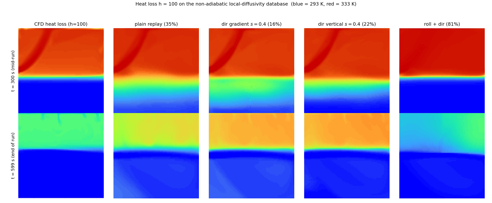
The physics behind that last sentence is the honest limit of the whole exercise. The CFD cools through a feedback loop: the film chills, turns heavy locally, breaks into a plume, and the plume renews the surface behind it. The loop repeats, intermittent and plume-sized. Every replay in the table reaches its end state by some other route, whether smearing, sharpening, or a steady prescribed roll. The one thing a recorded or prescribed motion cannot do is respond to the temperature field the replay is creating. The transport runs close the amount, and even the end-state look. What stays different is the texture of the cooling in between. That residue is the feedback itself, and it is the cleanest statement so far of what the frozen flow leaves out.
15.6 — Measuring the texture, not just the shade
Everything in §15.5 comes from watching frames, so it is fair to ask whether a measurement says the same thing. It does, and no new run is needed. Every frame on this page, CFD and replay alike, is rendered with the same fixed colour scale, 293–333 K, and the same view. That makes the frames comparable field by field. For each frame we cut out the chamber, map the colour back to a temperature value through its hue, and resample the chamber onto a common grid. Then we read three numbers over the cooling window, from $t = 320$ s to the end.
The first is how much structure sits off the layering: the spread of the field once each row's own mean is removed. A quiet, well-layered tank sits near zero, while plumes, rolls and blotches all raise it. The second is the one that matters most here. Compare a field's pattern with itself some seconds later, and see how fast the resemblance fades. Short-lived plumes appear and die, so the pattern renews and the resemblance drops quickly. A prescribed circulation prints the same cells frame after frame, so the resemblance holds. We report the lag at which half of it is left, and call it the renewal time. The third is the roughness of the front: how much the thermocline height varies from side to side, which a single centreline profile cannot show.
| field on the cooling window | structure off layering | renewal time (s) | front roughness |
|---|---|---|---|
| CFD, $h = 100$ | 0.018 | 14.7 | 0.005 |
| plain replay, adiabatic database | 0.028 | 115.9 | 0.008 |
| plain replay, heat-loss database | 0.032 | 19.5 | 0.007 |
| + directional sharpening, vertical $s=0.4$ | 0.027 | 44.5 | 0.005 |
| + prescribed roll, 20 mm/s | 0.050 | 91.8 | 0.029 |
| + roll 30 and vertical sharpening | 0.054 | 84.4 | 0.038 |
| roll baked into the database, 5 mm/s | 0.087 | >120 | 0.068 |
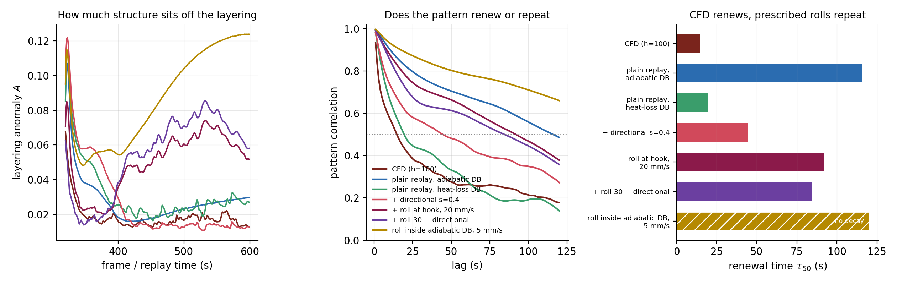
The CFD row looks strange at first. It has the least structure off the layering and the smoothest front of everything in the table, and still it renews its pattern fastest, in about 15 s. Both facts belong to the same picture. Its plumes are narrow, they live briefly, and between them the layer lies flat. Cooling through many small short-lived events leaves a field that looks calm on average and is never quite the same twice.
The rebuilt database now shows a gain the cooling curve had kept hidden. On the adiabatic database the plain replay hardly renews at all, about 116 s, which is what a frozen adiabatic recording should give. On the heat-loss database the same plain replay renews in 19.5 s, close to the CFD's 14.7 s. The recorded cooling flow carries the intermittency of the original, and the replay inherits it. Counted in captured cooling, that rebuild was worth six points, §15.3. Counted this way, it covers most of the distance to the reference.
The transport runs move the other way. The prescribed roll doubles to quintuples the off-layering structure, leaves the renewal time between 84 s and beyond the window, and roughens the front by six to thirteen times. The roll baked into the database is the extreme: its pattern does not fade at all inside 120 s, which is the two-cell fingerprint of Figure 11i written as a number. The sharpening runs sit in between, and the vertical form matches the CFD's front roughness most closely, which is what the mid-run frames already suggested.
So the two readings deserve to stand side by side. Ranked by captured cooling the runs go plain, mixing profile, roll. Ranked by process they go the other way, with the plain replay on the rebuilt database closest to the CFD and the roll runs furthest from it. One recovery number cannot rank the methods on its own. Two limits are worth stating: the values come from rendered frames, so they carry some compression noise, and the CFD frames are sampled from a smaller pixel box than the replay frames. Any bias from that would flatter the CFD's fine structure, and the CFD still shows the least of it, so the comparison runs against the bias rather than with it. The renewal time is built from correlations and does not depend on the amplitude scale at all.
15.7 — Where the cooling actually comes from
Everything above reads as a ladder of captured cooling, and it invites one assumption: that a run higher on the ladder must be pulling more heat through the cooled surface. That assumption is wrong, and checking it changed which operator was worth building next.
The tank is not closed. The inlet and the outlet both sit at mid height, so the mean temperature can fall for two different reasons: the wall takes heat out, or warm fluid leaves through the outlet. Both are measurable. The mass stays constant, so $\Delta H = m\,c_p\,\Delta T_\text{mean}$ with $m = 85.1$ g, taken from the CFD reference's own enthalpy and temperature traces. The wall term is the sink power the replay already writes out. What is left is the export.
| after the inflow stops ($t=320$ s to end) | $\Delta H$ (J) | wall (J) | outlet (J) | outlet share | capture |
|---|---|---|---|---|---|
| plain replay, adiabatic database | 4426 | 718 | 3709 | 84% | 29% |
| + mixed layer | 4594 | 876 | 3717 | 81% | 36% |
| + entrainment at the layer base | 4440 | 718 | 3723 | 84% | 30% |
| + mixing profile 75 mm, $c=1$ | 5266 | 850 | 4417 | 84% | 44% |
| + prescribed roll, 20 mm/s | 5566 | 776 | 4790 | 86% | 69% |
| plain replay, heat-loss database | 4915 | 903 | 4013 | 82% | 35% |
| + mixing profile 75 mm, $c=1$, heat-loss DB | 5484 | 831 | 4653 | 85% | 52% |
| + prescribed roll 20 mm/s, heat-loss DB | 5755 | 790 | 4964 | 86% | 74% |
Four fifths of the cooling leaves through the outlet in every single run, and the whole spread between the operators sits in that column: 3709 to 4790 J on the adiabatic database, while the wall column moves only from 718 to 876 J. The ladder of captured cooling is a ladder of advective export.
So the wall side was never the problem. The replays extract 1.7–2.0 kJ over the run and the CFD extracts about 1.5–1.8 kJ. The CFD never wrote its sink power out, so that figure was measured from its frames: the sink depends only on the top-layer temperature, the colour scale is fixed, and the same estimate applied to a replay reproduces its known sink energy to within 8–20%. Nothing in this study needed to improve the wall term, because it already matched.
If the export is what has to change, which property of an operator changes it? Four levers were swept and only one mattered. How far a parcel travels does nothing: the sorting adjustment at ten, thirty and fifty sweeps gives the same 2248 J of wall energy and the same end temperature to two decimals. How strong the operator is at one place saturates: an entrainment exchange placed at the layer base, with its amount fixed by the surface heat loss, gives 36% and stays there even when multiplied by twenty-five, because past a point the pair at the base is simply mixed out. How deep a weak profile reaches buys three points for a five-fold change in depth. What moves the number is how much of the column is stirred at full strength: 41% at 35 mm, 43% at 50 mm, 44% at 75 mm, 52% on the recorded cooling flow, and 69–74% for a circulation that stirs the whole tank.
That restates an earlier reading of this study. The bound we had put at roughly a third of the CFD cooling belongs to operators confined near the surface; given the whole column at full strength a local rule reaches 52%. The bound is about extent, not about being local.
Two operators are new here and both are worth keeping for what they rule out. The mixed layer sets its own depth from the heat already removed, $h=\sqrt{2(E/A)/(\rho c_p \Gamma)}$, with the stratification $\Gamma$ measured in the field every step, so nothing in it is tuned. It reaches 36% and 43% on the two databases, and its depth comes out at 20–25 mm, close to the value that had been set by hand. The entrainment form keeps that depth but puts the exchange at the layer base, where the measurement said the transport belongs, and it changes almost nothing. Both are silent in an adiabatic replay by construction: with the sink off no heat accumulates, the layer stays at its floor, and the end temperature is 307.62 K, the plain adiabatic value to the last digit.
This is the honest close of the transport line. The operators that reach the CFD's cooling stir fluid the buoyancy forcing cannot justify stirring, since the cold lower half is stably stratified and nothing asks for strong mixing there. The operators whose magnitude is set by the forcing itself move too little heat to matter. Between those two sentences lies the reason the replay cannot be made to match this case at the hook: the export the CFD achieves comes from a flow that rearranges the whole tank in response to its own temperature field, and a recorded flow cannot be asked to do that. What does help, without a single new constant, is recording the right flow. Every operator gains six to eight points when the database comes from the cooling run instead of the adiabatic one.
15.8 — The curves and the fields, not just the endpoint
Everything so far compares one number per run. The replay writes three field diagnostics and the CFD writes the same three, so the curves can be laid on top of each other instead. The replay's monitor now also carries the spatial heterogeneity $\delta T_\text{mean} = \sum m |T - T_\text{mean}| / \sum m$, with the definition the CFD side uses, so the third panel below is a direct comparison and not a proxy. Adding that column changed nothing else: the four runs were repeated with the new monitor and reproduced their archived end temperatures to the last digit.
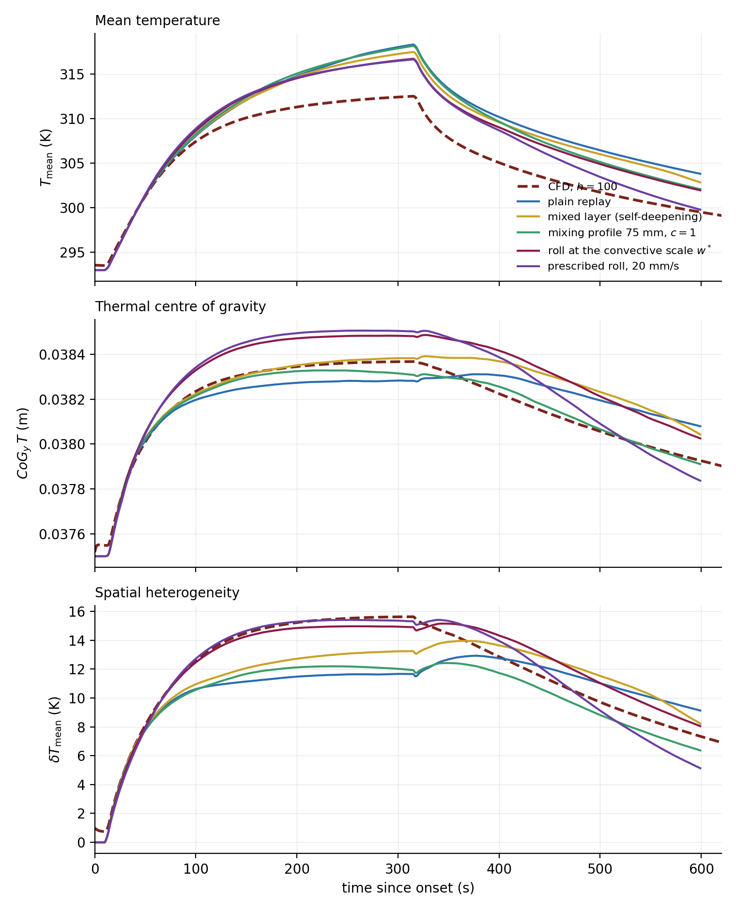
| run on the heat-loss database | capture | $\delta T_\text{mean}$ (K) | front width (mm) | renewal $\tau_{50}$ (s) | front roughness |
|---|---|---|---|---|---|
| CFD, $h=100$ | — | 6.76 | 4.48 | 14.7 | 0.0051 |
| plain replay | 35% | 9.30 | 8.81 | 19.5 | 0.0067 |
| + mixed layer | 43% | 8.62 | 13.83 | — | — |
| + mixing profile 75 mm, $c=1$ | 52% | 6.57 | 11.89 | 18.9 | 0.0120 |
| + roll at the convective scale $w^*$ | 53% | 8.31 | 12.73 | 67.4 | 0.0100 |
| + prescribed roll, 20 mm/s | 74% | 5.45 | 16.12 | 91.8 | 0.0288 |
Two of these runs are new. The roll at the convective scale answers the objection that the prescribed roll has a hand-set speed. A layer of depth $h$ cooled from above overturns at $w^* = (g\,\alpha\,(Q/\rho c_p A)\,h)^{1/3}$, and every input is already in the run: the sink power of the step, the cooled area, and the height of the roll band, with the expansion coefficient taken from the same density table the CFD uses. That gives $w^* \approx 3.6$ mm/s and a capture of 53%, just above the best local rule, with no constant left to choose. The 20 mm/s roll that reaches 74% runs at five and a half times $w^*$, so the difference between the two is exactly the part the buoyancy forcing does not pay for.
The second new run does not work, and it is worth recording why, because the mistake was ours. It was built to smooth the front inside the mixed layer rather than sharpen it, on the reading that the replay's front was already too thin. That reading came from a width measured in file order, which put the CFD's heat-loss front at 32 mm and the replay's at 8.9 mm. Measured properly, sorting by height and dropping the boundary sample, the CFD front is 4.48 mm and the plain replay 8.81 mm: the replay front is too broad, not too thin, so smoothing it is the wrong direction. The run recovers 1.2 of the 13 points that sharpening costs and its heterogeneity gets worse. The switch stays in the code at zero.
That correction also settles how to read the sharpening operator here. The CFD keeps a sharp thermocline under heat loss, 4.48 mm against 5.56 mm in the adiabatic reference, so sharpening is aimed at a real defect: the vertical normal takes the front from 8.81 to 5.07 mm, the closest match of any run. It still costs cooling, and the transport operators still smear the front to 12–16 mm while gaining it. No operator in the table improves both.
Read across the columns, the strong mixing profile is the best compromise of the set: within $0.2$ K of the CFD heterogeneity, renewing its pattern in 18.9 s against the reference's 14.7 s, and capturing 52%. The roll at $w^*$ captures the same amount but holds its pattern for 67.4 s, so its own geometry is still visible in the field, and the 20 mm/s roll wins the capture column while losing every other one.
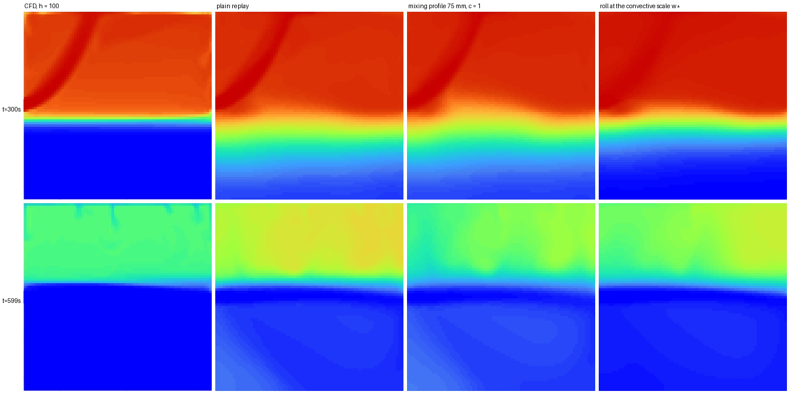
15.9 — Letting the database place the sharpening
Every table so far judges the sharpening by the cooling it costs. That is the wrong yardstick for what the operator is meant to do, and once the field measures are read instead, two things change.
First, the database can say where to sharpen. The stored local diffusivity is the sub-grid mixing the CFD actually had at that cell and frame, and it is what the face swap applies: the volume a face swaps is $D\,A/d\,\Delta t$, which on this cubic mesh is $D\,c_s\,\Delta t$. So where the recorded value is large, part of the width the replay carries is physical and the up-gradient step should hold back; where it is small, the width is numerical and the step belongs there. The strength is therefore scaled by $w = 1 - D_\text{face}/D_\text{ref}$, with $D_\text{ref}$ the largest recorded value in the field that step, taken by reduction, so nothing in the weight is set by hand. Reading that field during a replay needed a small read-only addition to the library: the existing reader is limited to preparation mode and to frame 0, while a replay needs the state and frame the swap itself is using.
Second, the step can be gated to the front. The $\cos^2\theta$ weight says which way to move heat but not where, so a weak ripple in the well-mixed upper layer whose gradient happens to point the right way is sharpened as hard as the thermocline. Scaling by the squared face gradient against the largest gradient in the field removes that, and the exponent $p$ in $(|\nabla T|/|\nabla T|_\text{max})^p$ decides how much of the front's flanks the step still reaches.
| sharpening on the heat-loss database | capture | $\delta T_\text{mean}$ (K) | front width (mm) |
|---|---|---|---|
| CFD, $h=100$ | — | 6.76 | 4.48 |
| plain replay | 35% | 9.30 | 8.81 |
| vertical normal, $s=0.4$ | 22% | 12.30 | 5.07 |
| gradient normal, $s=0.4$ | 16% | 11.20 | 4.97 |
| vertical + local diffusivity | 24% | 12.20 | 5.54 |
| gradient + local diffusivity | 19% | 11.27 | 5.46 |
| gradient + front gate, $p=1$ | 27% | 10.36 | 6.96 |
| gradient + front gate, $p=2$ | 31% | 9.81 | 7.96 |
| gradient + gate + local diffusivity | 32% | 9.78 | 8.06 |
The table is monotone and there is no gap in it. The more the operator is held back, by the local diffusivity or by the gate, the closer the capture and the heterogeneity come to the plain replay and the wider the front grows; the more it is let go, the closer the front comes to the reference and the worse the other two get. No setting improves the heterogeneity below the plain replay's 9.30 K. The front is what this operator can deliver, and it does deliver it: 8.81 mm down to 4.97 mm against the reference's 4.48 mm.
The second change looks at first like a reversal. Judged on captured cooling the vertical normal leads the gradient-based one, 22% against 16%. Judged on the two field numbers in the table above the order turns over: the gradient normal has both the thinner front, 4.97 against 5.07 mm, and the lower heterogeneity, 11.20 against 12.30 K.
Neither of those is the same as asking how close the picture is, so we measured that directly. Both sources render temperature over the same fixed scale, so a frame can be decoded back to Kelvin and subtracted from the reference frame of the same second. The mean of $|T_ ext{replay} - T_ ext{CFD}|$ over the chamber, averaged over 108 frames of the cooling window, is one number per run.
| distance of the field from the reference | mean $|\Delta T|$ (K) | after 400 s (K) |
|---|---|---|
| prescribed roll, 20 mm/s | 2.10 | 2.33 |
| roll at the convective scale $w^*$ | 2.20 | 2.65 |
| step encroachment | 2.26 | 3.40 |
| mixing profile 75 mm, $c=1$ | 2.93 | 2.51 |
| plain replay | 3.51 | 3.87 |
| vertical normal, $s=0.4$ | 3.74 | 4.82 |
| gradient normal, $s=0.4$ | 4.14 | 5.26 |
That ordering is uncomfortable and it should be stated plainly. On the measure that comes closest to the question, the transport operators are nearest to the reference field and the sharpening operators are furthest, further than doing nothing at all: 3.51 K for the plain replay against 3.74 and 4.14 K for the two normals. The gradient normal, which leads on front width and on heterogeneity, is last here. The reason is area. A front is a few millimetres of the chamber while the layers are the rest of it, and sharpening leaves those layers several Kelvin too warm, so whatever it wins at the interface it loses over the area around it.
So the earlier reading of this section needs correcting: it is not that the gradient normal is preferable for the appearance of the field. Neither normal improves the appearance. What the sharpening line delivers is the front, and the front alone.
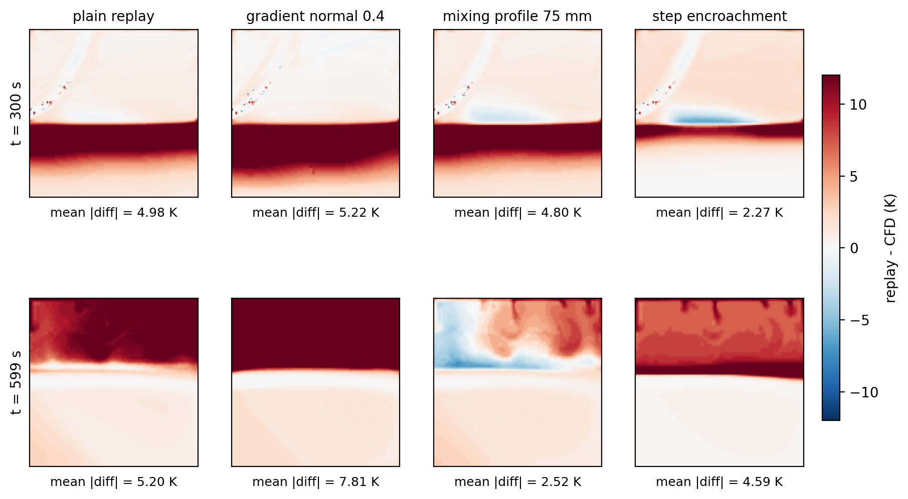
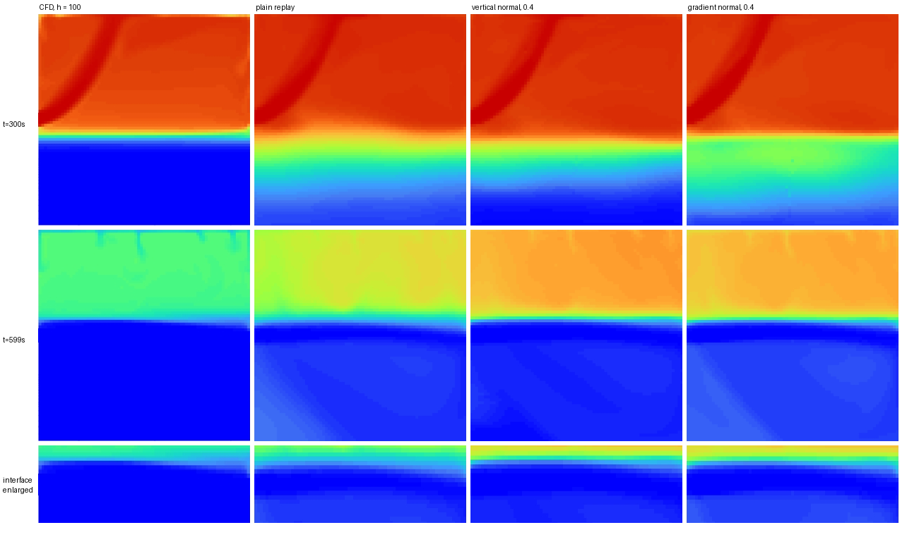
That figure is the honest summary of this line. In the adiabatic case one operator was enough, because the only defect was a smeared front. Here there are two, the front and the vertical distribution of heat, and sharpening reaches only the first. What the montage still misses once the front is repaired is the shade, and a step that rearranges heat without carrying it cannot supply that.
Where this leaves the heat-loss case
The wall term was matched from the start: the replays extract 1.7–2.0 kJ against about 1.5–1.8 kJ in the reference. What is missing is the advective export, and that is produced in the CFD by a flow which rearranges the whole tank in response to its own temperature field. A recorded flow cannot be asked to do that, so the hook can only imitate it. Rebuilding the database from the cooling run is what helps without a single new constant, lifting every operator by six to eight points, and a circulation whose speed comes from the convective scale reaches 53% with nothing left to tune. Beyond that, the capture column keeps rising only when the operator stirs more of the tank than the buoyancy forcing pays for, and the field metrics show the cost.
Pulling Steps 1 and 2 into the written thesis.
planned16 — Step 3: Writing & Finalization
The final stage: consolidate the workflow, the face-swap study, the heat-loss analysis, and the database rebuild into the written thesis (methods, results, and discussion) and tidy up the figures and references for submission.
Not started yet; this section is a placeholder so the roadmap is complete.
References
- T. Lichtenegger and S. Pirker, Recurrence CFD — a novel approach to simulate multiphase flows with strongly separated time scales, Chemical Engineering Science 153, 394–410 (2016).
- S. Pirker and T. Lichtenegger, Efficient time-extrapolation of single- and multiphase simulations by transport-based recurrence CFD (rCFD), Chemical Engineering Science 188, 65–83 (2018). §2.4 describes the one-step cell-to-cell exchange used for face-swap diffusion, and the separate "global balance safety belt" that uses the same exchange to keep the global mass conserved. §3.2 reports a fluidised-bed heat-transfer case where transport-based rCFD smears out the sharp, localised heat-transfer layer.
- H. Lumetzberger, S. Pirker and T. Lichtenegger, Propagator-moments approximation for recurrence CFD: application to species transport in turbulent flows, Chemical Engineering Science 311, 121624 (2025). Modern propagator-theoretic derivation of the face-swap operator.
- R. J. Hyndman and A. B. Koehler, Another look at measures of forecast accuracy, International Journal of Forecasting 22(4), 679–688 (2006). Standard reference for the bias, MAE, RMSE error metrics used here.
- S. Abbasi, S. Pirker and T. Lichtenegger, Application of recurrence CFD (rCFD) to species transport in turbulent vortex shedding, Computers and Fluids 196, 104348 (2020). Source of the $D_\text{rec} = D + D_\text{sgs}$ decomposition motivating the local-diffusion path.
- ANSYS Inc., ANSYS Fluent Theory Guide, Release 2022 R2, Canonsburg, PA (2022).
- Particulate Flow Modelling, JKU Linz, rCFDreloaded source code, internal repository (2026). Implementation reference for the face-swap operator (
src/rCFD_swap.h). - J. P. Boris and D. L. Book, Flux-Corrected Transport. I. SHASTA, a fluid transport algorithm that works, Journal of Computational Physics 11(1), 38–69 (1973). Origin of the no-new-extremum rule used by the sharpening concept in §9.4.
- S. T. Zalesak, Fully multidimensional Flux-Corrected Transport algorithms for fluids, Journal of Computational Physics 31(3), 335–362 (1979). Multidimensional form of the flux limiter.